# YOU MIGHT need to download some special packages on github: travelSurveyTools, psrcelmer, and psrcplot. IF you need to download them, here's how:
# library(devtools)
#
# devtools::install_github('rsgInc/travelSurveyTools')
# devtools::install_github('psrc/psrcelmer')
# devtools::install_github('psrc/psrcplot')
# devtools::install_github('psrc/psrc.travelsurvey', force=TRUE)
library(data.table)
library(stringr)
library(travelSurveyTools)
library(psrcelmer)
library(dplyr)
library(psrcplot)
library(tidyverse)
library(table1)
library(psrc.travelsurvey)
library(sf) #for regional geographies
sf_use_s2(FALSE)
library(corrplot) #for correlation analysis
source('../survey-23-preprocess.R')
# source('C:/Users/mrichards/Documents/GitHub/travel-studies/2023/summary/survey-23-preprocess.R')Displacement
General setup
PSRC and RSG have built a new package called travelSurveyTools to work with travel survey data. It is recommended to read through this documentation before you start using the package. https://rsginc.github.io/travelSurveyTools/
Read in Libraries
Read in Codebook
cb_path = str_glue("J:/Projects/Surveys/HHTravel/Survey2023/Data/data_published/PSRC_Codebook_2023_v1.xlsx")
variable_list = readxl::read_xlsx(cb_path, sheet = 'variable_list')
value_labels = readxl::read_xlsx(cb_path, sheet = 'value_labels')
setDT(variable_list)
setDT(value_labels)Read in Data from Elmer
# Specify which variables to retrieve
# View(psrc.travelsurvey:::init_variable_list)
vars <- c(
#household-level variables
'household_id', 'res_dur', 'prev_home_wa', 'home_rgcname',
'prev_home_rgcname', 'home_county', 'prev_home_county',
'home_jurisdiction', 'prev_rent_own', 'rent_own',
'prev_res_type', 'res_type',
'hhsize', 'numadults', 'numchildren', 'numworkers', 'vehicle_count',
'hhincome_detailed', 'hhincome_broad',
'prev_res_factors_amenities', 'prev_res_factors_community_change',
'prev_res_factors_crime', 'prev_res_factors_employment',
'prev_res_factors_forced', 'prev_res_factors_hh_size',
'prev_res_factors_housing_cost', 'prev_res_factors_income_change',
'prev_res_factors_less_space', 'prev_res_factors_more_space',
'prev_res_factors_no_answer', 'prev_res_factors_other',
'prev_res_factors_quality', 'prev_res_factors_school',
'prev_res_factors_specify', 'prev_res_factors_telework',
'hh_race_category',
"home_jurisdiction","home_lat","home_lng",
#person-level variables
'race_category', 'race_afam', 'race_aiak', 'race_asian', 'race_hapi',
'race_noanswer', 'race_other', 'race_other_specify', 'race_white',
'ethnicity_1', 'ethnicity_2', 'ethnicity_3', 'ethnicity_4',
'ethnicity_997', 'ethnicity_999', 'ethnicity_other',
'person_id', 'gender', 'age',
'education', 'employment')
# Retrieve the data
hts_data <- get_psrc_hts(survey_vars = vars) # default includes all survey_yearsThe survey instrument is here: J:/Projects/Surveys/HHTravel/Survey2023/Documents/Survey_Instrument/Puget_Sound_HTS_Questionnaire_2023_Final.docx
Open the codebook and review the variable and it’s values. J:/Projects/Surveys/HHTravel/Survey2023/Data/data_published/PSRC_Codebook_2023_v1.xlsx
Research notes
Who was asked?
2017
- How long have you lived at your current residence?
- Was your previous home located in the state of Washington? - If lived in residence <= 5 years
2019
- [res_duration]
- [prev_home_wa] - if lived in current residence <= 5 years
- [prev_res_factors] - if previous home was in Washington (and moved in past 5 years)
2021
- [RES_DURATION]
- [PREV_HOME_WA] - if lived in current residence <= 5 years
- [PREV_RES_FACTORS] - if previous home was in Washington (and moved in past 5 years)
2023
- [RES_DURATION] - if rMove or (rMove for Web and person 1)
- [PREV_HOME_WA] - if lived in current residence <= 5 years
- [PREV_RES_FACTORS] - if previous home was in Washington
How were the questions asked?
The 2017 survey didn’t ask about [prev_res_factors], so displacement will be analyzed for 2019, 2021, and 2023.
Which of the following were important factors in your decision to move away from your previous residence? Select all that apply.
2019
- Could no longer afford previous residence because of an increase in rent or housing costs
- Could no longer afford previous residence because of a change in income or finances
- Friends, family, or cultural community were leaving the area
- Changes in household size, establish own household
- Needed more space
- Needed less space
- Employment or commuting considerations (e.g., to take new job or shorten commute)
- Access to a different K-12 school
- Concerns about safety or crime
- To upgrade to a better quality home or to stop renting and buy a home
- Forced to move out (e.g., building demolished or renovated, asked to leave by landlord, foreclosure)
- Other reason
- Prefer not to answer
2021 (same wording as 2019 with a few additional options)
- COVID-19 removed need to live in previous residence (e.g., no longer need to attend work or school in-person)
- Concerns about COVID-19 health risks
2023 (similar options, but some new options and different wording of others)
- Increase in rent or housing costs, could no longer afford previous place
- Change in income or finances, could no longer afford previous place
- Friends, family, or cultural community left or were leaving the area
- Change in who you live with (e.g., move out on your own, getting married/divorced)
- Needed more space
- Needed less space
- To have better access to work (e.g., better commute or take new job)
- To have better access to recreation, restaurants, shops, and other amenities
- Employer’s telework policy removed need to live in previous residence
- Access to a different K-12 school
- Concerns about safety or crime
- To upgrade to a better-quality home or to stop renting and buy a home
- Forced to move out (e.g., building demolished or renovated, asked to leave by landlord, foreclosure)
- Other reason
- Prefer not to answer
Topics to explore
- Demographics (household level)
- race/ethnicity
- lifecycle
- household size
- number of children
- income
- number of vehicles
- education?
- Previous and current living:
- housing tenure
- housing type
- Spatial patterns (limited for 2023)
- RGCs
Data setup
Identify displaced movers
There was a problem with the 2023 HTS data, where the previous home location question was only asked to respondents who moved within the last five years AND moved from OUTSIDE of WA state. Therefore, we are unable to do any useful analyses moves/displacement based on where households had lived within our region.
To identify movers we are choosing those who have moved within the past five years and those who previously lived in Washington state.
To identify displacement, respondents were asked about their reasons for moving. 4 of the 14 reasons are linked with displacement:
- Increase in rent or housing costs, could no longer afford previous place
- Change in income or finances, could no longer afford previous place
- Friends, family, or cultural community left or were leaving the area
- Forced to move out (e.g., building demolished or renovated, asked to leave by landlord, foreclosure)
# unique(hts_data$hh$res_dur)
hts_data$hh <- hts_data$hh %>%
mutate(movers=case_when(res_dur=="Less than a year" |
res_dur=="Between 1 and 2 years" |
res_dur=="Between 2 and 3 years" |
res_dur=="Between 3 and 5 years"
~ 'Did move',
res_dur=="Missing Response" ~ 'No response',
TRUE ~ 'Did not move'),
displaced=case_when(prev_res_factors_forced=='Selected'|
prev_res_factors_income_change=='Selected'|
prev_res_factors_housing_cost =='Selected'|
prev_res_factors_community_change=='Selected'~ 'Displaced',
TRUE~'Not displaced'))
table(hts_data$hh$movers, hts_data$hh$displaced)
Displaced Not displaced
Did move 952 5495
Did not move 6 5314
No response 0 341# There is an issue with the 2023 data where some people who hadn't moved within the past 5 years were able to select reasons for moving (prev_res_factors). This shouldn't have happened: all respondents were asked how long they had been in their current homes > if they chose <5 years they were asked if their previous residence had been in WA > if yes, they were asked to select why they moved. As a result, we will need to filter out the people who did not move.
hts_data$hh <- hts_data$hh %>%
filter(movers == "Did move")
# to check
table(hts_data$hh$movers, hts_data$hh$displaced)
Displaced Not displaced
Did move 952 5495table(hts_data$hh$movers, hts_data$hh$res_dur)
Less than a year Between 1 and 2 years Between 2 and 3 years
Did move 1923 1627 1262
Between 3 and 5 years Between 5 and 10 years Between 10 and 20 years
Did move 1635 0 0
More than 20 years Missing Response
Did move 0 0table(hts_data$hh$res_dur, hts_data$hh$displaced)
Displaced Not displaced
Less than a year 257 1666
Between 1 and 2 years 241 1386
Between 2 and 3 years 194 1068
Between 3 and 5 years 260 1375
Between 5 and 10 years 0 0
Between 10 and 20 years 0 0
More than 20 years 0 0
Missing Response 0 0Some of these movers came from out of the state or country
table(hts_data$hh$prev_home_wa, hts_data$hh$survey_year)
2017 2019 2021 2023
Yes, previous home was in Washington 1427 1305 762 1392
No, previous home was in another state or country 547 435 202 0
No, previous home was in another state 0 0 0 336
No, previous home was in another country 0 0 0 41But we want to focus on those who have moved within the state
# filter to only those who previously lived in WA (wanted to get the total number of respondents who moved/didn't move - if filter had been in previous, those who did not move would not have been included because the prev_home_wa was only asked of people who reported moving within the past 5 years)
hts_data$hh <- hts_data$hh %>%
filter(prev_home_wa=="Yes, previous home was in Washington")Based on a denominator of 1276 in 2023, we can look at displacement.
table(hts_data$hh$displaced, hts_data$hh$survey_year)
2017 2019 2021 2023
Displaced 0 362 217 371
Not displaced 1427 943 545 1021# create csv for checking
# write.csv(hts_data$hh,
# "T:/2024October/Mary/HHTS/displacement_check.csv")Remove 2017 year from data
The 2017 survey did not ask respondents about why they moved, so they cannot be categorized as displaced or not displaced.
hts_data$hh <- hts_data$hh %>%
filter(survey_year!=2017)Add standard groupings
Based on https://psrc.github.io/psrc.travelsurvey/articles/add-standard-groupings.html
hts_data <- hts_data %>%
hts_bin_income() %>%
hts_bin_hhsize() %>%
hts_bin_rent_own() %>%
hts_bin_vehicle_count() %>%
hts_bin_edu() %>%
hts_bin_worker()Explore ‘Other’ responses
Demographics
Household Race
2023
All races
AANHIPI non-Hispanic, Black or African American non-Hispanic, Hispanic, Missing/No response, Some Other Races non-Hispanic, White non-Hispanic
The prop field is weighted and matches the estimate.
# unique(hts_data$hh$hh_race_category)
# table(hts_data$hh$hh_race_category)
# Calculate a categorical summary, i.e. count/share
disp_allrace <- psrc_hts_stat(hts_data,
analysis_unit="hh",
group_vars=c("hh_race_category", "displaced"))
focus_year <- 2023
# view data
head(dplyr::select(disp_allrace[survey_year==focus_year],
-c(survey_year))) hh_race_category displaced count prop
<char> <char> <int> <num>
1: AANHPI non-Hispanic Displaced 70 0.2681645
2: AANHPI non-Hispanic Not displaced 193 0.7318355
3: Black or African American non-Hispanic Displaced 11 0.1240515
4: Black or African American non-Hispanic Not displaced 37 0.8759485
5: Hispanic Displaced 33 0.2174552
6: Hispanic Not displaced 69 0.7825448
prop_moe est est_moe
<num> <num> <num>
1: 0.1108823 32513.555 15556.954
2: 0.1108823 88731.281 25355.205
3: 0.1117127 3086.884 2707.870
4: 0.1117127 21797.004 11525.156
5: 0.1285720 15079.729 9715.679
6: 0.1285720 54266.652 21298.238# create chart
static_column_chart(filter(disp_allrace, survey_year == focus_year,
displaced=="Displaced"),
x = "hh_race_category", y = "prop", fill = "displaced",
ylabel = "% of respondents", xlabel = "Household race",
title = paste0("Displacement by Household Race (", focus_year, ")"),
moe = "prop_moe") + theme(
axis.text.x = element_text(size = 14),
axis.text.y = element_text(size = 14),
axis.title.y = element_text(size = 20),
axis.title.x = element_text(size = 20),
plot.title = element_text(size = 24)
)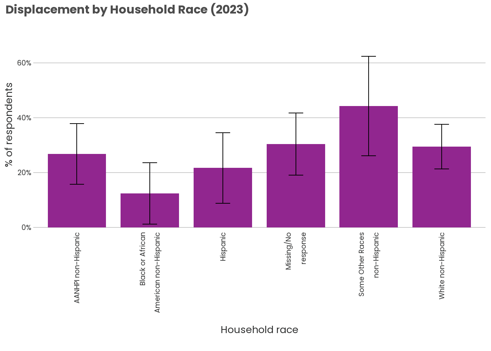
# All years
static_line_chart(filter(disp_allrace,
displaced=="Displaced"),
x = "survey_year", y = "prop", fill = "hh_race_category",
ylabel = "% of respondents", xlabel = "Household race",
title = paste0("Displacement by Household Race")) + theme(
axis.text.x = element_text(size = 14),
axis.text.y = element_text(size = 14),
axis.title.y = element_text(size = 20),
axis.title.x = element_text(size = 20),
plot.title = element_text(size = 24)
)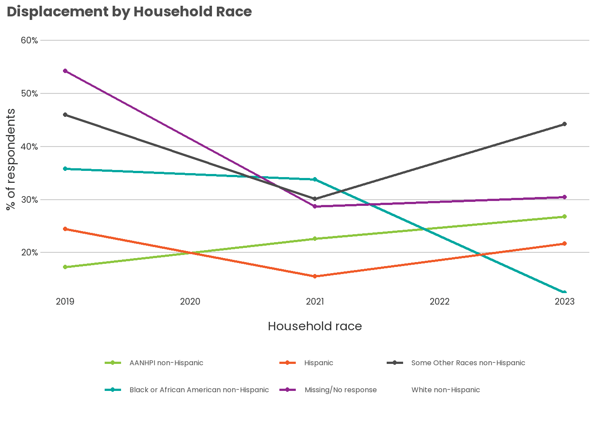
4 races
AANHPI non-Hispanic, Hispanic, Missing/No response, Other POC non-Hispanic, White non-Hispanic
hts_data$hh <- mutate(hts_data$hh,
hh_race_category_4= case_when(hh_race_category=="Black or African American non-Hispanic"|
hh_race_category=="Some Other Races non-Hispanic" ~ "Other POC non-Hispanic",
TRUE~hh_race_category))
# checking numbers
# unique(hts_data$hh$hh_race_category_4)
# table(hts_data$hh$hh_race_category_4)
# Calculate a categorical summary, i.e. count/share
disp_4race <- psrc_hts_stat(hts_data,
analysis_unit="hh",
group_vars=c("hh_race_category_4", "displaced"))
# view data
head(dplyr::select(disp_4race[survey_year==focus_year],
-c(survey_year))) hh_race_category_4 displaced count prop prop_moe est
<char> <char> <int> <num> <num> <num>
1: AANHPI non-Hispanic Displaced 70 0.2681645 0.1108823 32513.56
2: AANHPI non-Hispanic Not displaced 193 0.7318355 0.1108823 88731.28
3: Hispanic Displaced 33 0.2174552 0.1285720 15079.73
4: Hispanic Not displaced 69 0.7825448 0.1285720 54266.65
5: Missing/No response Displaced 70 0.3042709 0.1133098 42686.93
6: Missing/No response Not displaced 178 0.6957291 0.1133098 97605.58
est_moe
<num>
1: 15556.954
2: 25355.205
3: 9715.679
4: 21298.238
5: 19749.680
6: 25658.289# create chart
static_column_chart(filter(disp_4race, survey_year == focus_year,
displaced=="Displaced"),
x = "hh_race_category_4", y = "prop", fill = "displaced",
ylabel = "% of respondents", xlabel = "Household race",
title = paste0("Displacement by Household Race (", focus_year, ")"),
moe = "prop_moe") + theme(
axis.text.x = element_text(size = 14),
axis.text.y = element_text(size = 14),
axis.title.y = element_text(size = 20),
axis.title.x = element_text(size = 20),
plot.title = element_text(size = 24)
)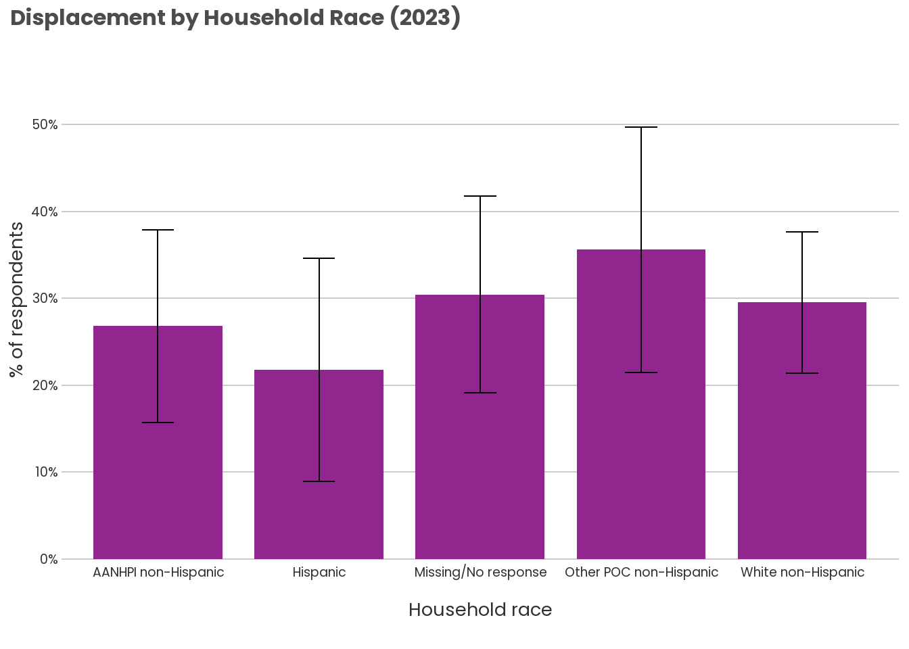
# All years
static_line_chart(filter(disp_4race,
displaced=="Displaced"),
x = "survey_year", y = "prop", fill = "hh_race_category_4",
ylabel = "% of respondents", xlabel = "Household race",
title = paste0("Displacement by Household Race")) + theme(
axis.text.x = element_text(size = 14),
axis.text.y = element_text(size = 14),
axis.title.y = element_text(size = 20),
axis.title.x = element_text(size = 20),
plot.title = element_text(size = 24)
)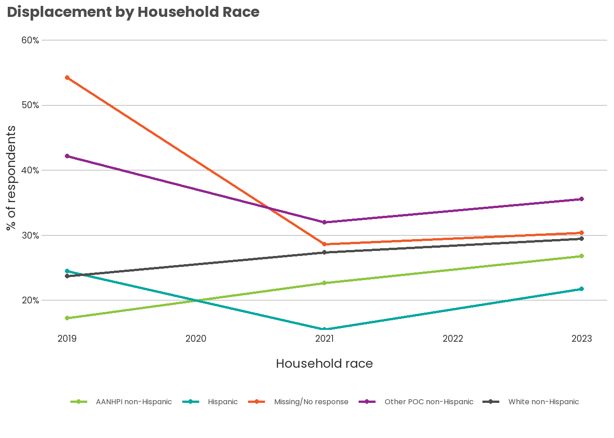
3 races
AANHPI non-Hispanic, Missing/No response, Non-Asian POC, White non-Hispanic
hts_data$hh <- mutate(hts_data$hh,
hh_race_category_3= case_when(hh_race_category=="Black or African American non-Hispanic"|
hh_race_category=="Hispanic" ~ "Non-Asian POC",
hh_race_category=="Some Other Races non-Hispanic" ~ "Non-Asian POC",
TRUE~hh_race_category))
# checking numbers
# unique(hts_data$hh$hh_race_category_3)
table(hts_data$hh$hh_race_category_3)
AANHPI non-Hispanic Missing/No response Non-Asian POC White non-Hispanic
634 365 564 1896 # Calculate a categorical summary, i.e. count/share
disp_3race <- psrc_hts_stat(hts_data,
analysis_unit="hh",
group_vars=c("hh_race_category_3", "displaced"))
# view data
head(dplyr::select(disp_3race[survey_year==focus_year],
-c(survey_year))) hh_race_category_3 displaced count prop prop_moe est
<char> <char> <int> <num> <num> <num>
1: AANHPI non-Hispanic Displaced 70 0.2681645 0.11088225 32513.56
2: AANHPI non-Hispanic Not displaced 193 0.7318355 0.11088225 88731.28
3: Missing/No response Displaced 70 0.3042709 0.11330979 42686.93
4: Missing/No response Not displaced 178 0.6957291 0.11330979 97605.58
5: Non-Asian POC Displaced 64 0.2963536 0.09952883 47687.02
6: Non-Asian POC Not displaced 140 0.7036464 0.09952883 113225.52
est_moe
<num>
1: 15556.95
2: 25355.20
3: 19749.68
4: 25658.29
5: 18575.36
6: 30203.33# create chart
static_column_chart(filter(disp_3race, survey_year == focus_year,
displaced=="Displaced"),
x = "hh_race_category_3", y = "prop", fill = "displaced",
ylabel = "% of respondents", xlabel = "Household race",
title = paste0("Displacement by Household Race (", focus_year, ")"),
moe = "prop_moe") + theme(
axis.text.x = element_text(size = 14),
axis.text.y = element_text(size = 14),
axis.title.y = element_text(size = 20),
axis.title.x = element_text(size = 20),
plot.title = element_text(size = 24)
)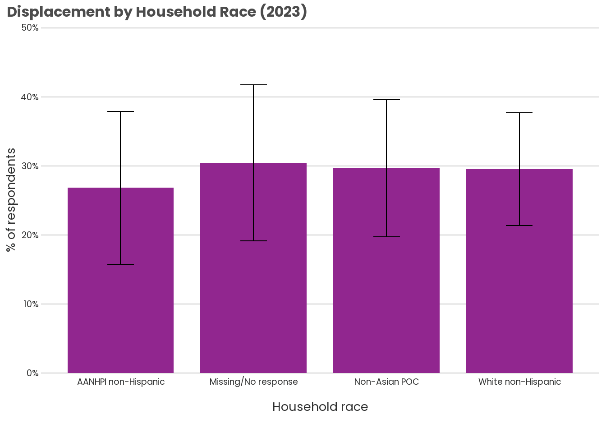
# All years
static_line_chart(filter(disp_3race,
displaced=="Displaced"),
x = "survey_year", y = "prop", fill = "hh_race_category_3",
ylabel = "% of respondents", xlabel = "Household race",
title = paste0("Displacement by Household Race")) + theme(
axis.text.x = element_text(size = 14),
axis.text.y = element_text(size = 14),
axis.title.y = element_text(size = 20),
axis.title.x = element_text(size = 20),
plot.title = element_text(size = 24)
)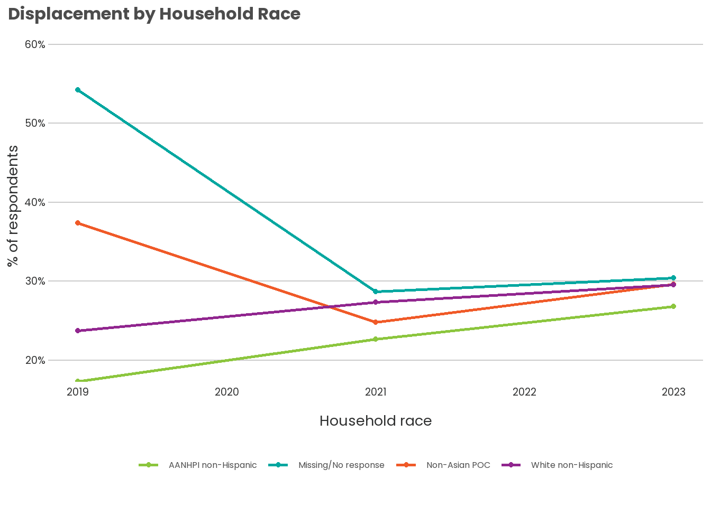
2 races
People of Color, Missing/No response, White non-Hispanic
hts_data$hh <- mutate(hts_data$hh,
hh_race_category_2= case_when(hh_race_category=="AANHPI non-Hispanic"|
hh_race_category=="Black or African American non-Hispanic"|
hh_race_category=="Hispanic"|
hh_race_category=="Some Other Races non-Hispanic" ~ "POC",
TRUE~hh_race_category))
# checking numbers
# unique(hts_data$hh$hh_race_category_2)
# table(hts_data$hh$hh_race_category_2)
# Calculate a categorical summary, i.e. count/share
disp_2race <- psrc_hts_stat(hts_data,
analysis_unit="hh",
group_vars=c("hh_race_category_2", "displaced"))
# view data
head(dplyr::select(disp_2race[survey_year==focus_year],
-c(survey_year))) hh_race_category_2 displaced count prop prop_moe est
<char> <char> <int> <num> <num> <num>
1: Missing/No response Displaced 70 0.3042709 0.11330979 42686.93
2: Missing/No response Not displaced 178 0.6957291 0.11330979 97605.58
3: POC Displaced 134 0.2842406 0.07432201 80200.57
4: POC Not displaced 333 0.7157594 0.07432201 201956.80
5: White non-Hispanic Displaced 167 0.2951948 0.08143345 65774.89
6: White non-Hispanic Not displaced 510 0.7048052 0.08143345 157043.70
est_moe
<num>
1: 19749.68
2: 25658.29
3: 24018.21
4: 38662.06
5: 21662.58
6: 30918.30# create chart
static_column_chart(filter(disp_2race, survey_year == focus_year,
displaced=="Displaced"),
x = "hh_race_category_2", y = "prop", fill = "displaced",
ylabel = "% of respondents", xlabel = "Household race",
title = paste0("Displacement by Household Race"),
moe = "prop_moe") + theme(
axis.text.x = element_text(size = 14),
axis.text.y = element_text(size = 14),
axis.title.y = element_text(size = 20),
axis.title.x = element_text(size = 20),
plot.title = element_text(size = 24)
)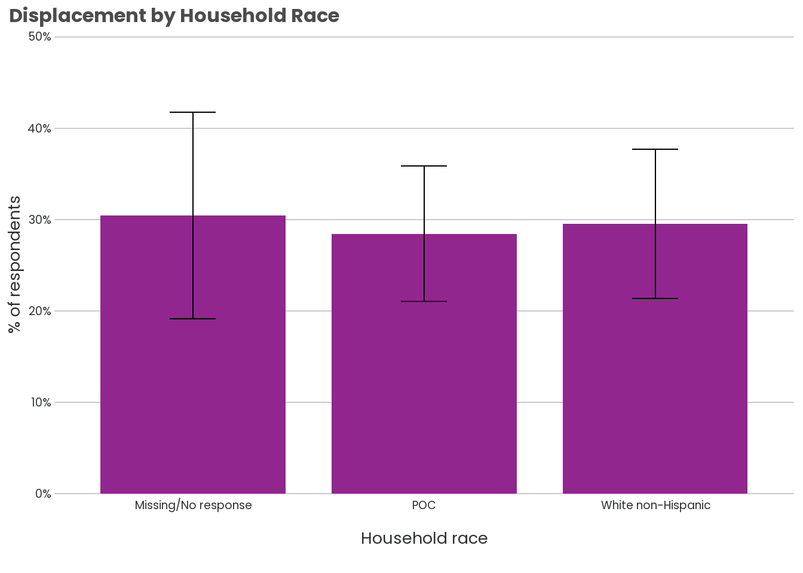
# All years
static_line_chart(filter(disp_2race,
displaced=="Displaced"),
x = "survey_year", y = "prop", fill = "hh_race_category_2",
ylabel = "% of respondents", xlabel = "Household race",
title = paste0("Displacement by Household Race (", focus_year, ")")) + theme(
axis.text.x = element_text(size = 14),
axis.text.y = element_text(size = 14),
axis.title.y = element_text(size = 20),
axis.title.x = element_text(size = 20),
plot.title = element_text(size = 24)
)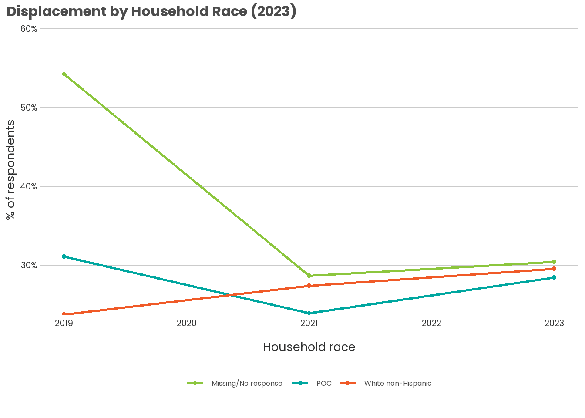
2021
All races
AANHIPI non-Hispanic, Black or African American non-Hispanic, Hispanic, Missing/No response, Some Other Races non-Hispanic, White non-Hispanic
The prop field is weighted and matches the estimate.
# unique(hts_data$hh$hh_race_category)
# table(hts_data$hh$hh_race_category)
# Calculate a categorical summary, i.e. count/share
disp_allrace <- psrc_hts_stat(hts_data,
analysis_unit="hh",
group_vars=c("hh_race_category", "displaced"))
focus_year <- 2021
# view data
head(dplyr::select(disp_allrace[survey_year==focus_year],
-c(survey_year))) hh_race_category displaced count prop
<char> <char> <int> <num>
1: AANHPI non-Hispanic Displaced 31 0.2264935
2: AANHPI non-Hispanic Not displaced 128 0.7735065
3: Black or African American non-Hispanic Displaced 13 0.3376553
4: Black or African American non-Hispanic Not displaced 30 0.6623447
5: Hispanic Displaced 13 0.1551735
6: Hispanic Not displaced 47 0.8448265
prop_moe est est_moe
<num> <num> <num>
1: 0.09821300 25396.36 12733.541
2: 0.09821300 86732.09 20212.812
3: 0.18150602 16146.75 11032.998
4: 0.18150602 31673.46 13609.685
5: 0.09751604 11147.66 7338.615
6: 0.09751604 60692.29 20498.099# create chart
static_column_chart(filter(disp_allrace, survey_year == focus_year,
displaced=="Displaced"),
x = "hh_race_category", y = "prop", fill = "displaced",
ylabel = "% of respondents", xlabel = "Household race",
title = paste0("Displacement by Household Race (", focus_year, ")"),
moe = "prop_moe") + theme(
axis.text.x = element_text(size = 14),
axis.text.y = element_text(size = 14),
axis.title.y = element_text(size = 20),
axis.title.x = element_text(size = 20),
plot.title = element_text(size = 24)
)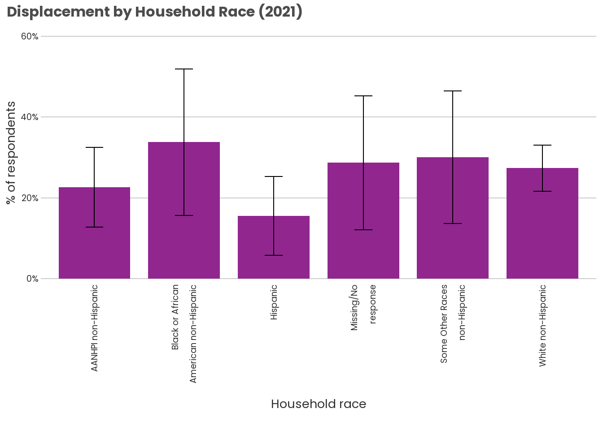
4 races
AANHPI non-Hispanic, Hispanic, Missing/No response, Other POC non-Hispanic, White non-Hispanic
# checking numbers
# unique(hts_data$hh$hh_race_category_4)
# table(hts_data$hh$hh_race_category_4)
# Calculate a categorical summary, i.e. count/share
disp_4race <- psrc_hts_stat(hts_data,
analysis_unit="hh",
group_vars=c("hh_race_category_4", "displaced"))
# view data
head(dplyr::select(disp_4race[survey_year==focus_year],
-c(survey_year))) hh_race_category_4 displaced count prop prop_moe est
<char> <char> <int> <num> <num> <num>
1: AANHPI non-Hispanic Displaced 31 0.2264935 0.09821300 25396.36
2: AANHPI non-Hispanic Not displaced 128 0.7735065 0.09821300 86732.09
3: Hispanic Displaced 13 0.1551735 0.09751604 11147.66
4: Hispanic Not displaced 47 0.8448265 0.09751604 60692.29
5: Missing/No response Displaced 15 0.2867783 0.16536339 12379.23
6: Missing/No response Not displaced 32 0.7132217 0.16536339 30787.32
est_moe
<num>
1: 12733.541
2: 20212.812
3: 7338.615
4: 20498.099
5: 8340.764
6: 13564.454# create chart
static_column_chart(filter(disp_4race, survey_year == focus_year,
displaced=="Displaced"),
x = "hh_race_category_4", y = "prop", fill = "displaced",
ylabel = "% of respondents", xlabel = "Household race",
title = paste0("Displacement by Household Race (", focus_year, ")"),
moe = "prop_moe") + theme(
axis.text.x = element_text(size = 14),
axis.text.y = element_text(size = 14),
axis.title.y = element_text(size = 20),
axis.title.x = element_text(size = 20),
plot.title = element_text(size = 24)
)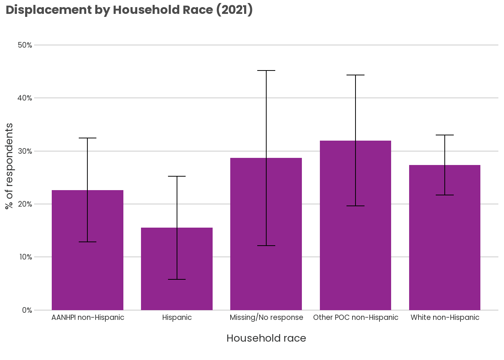
3 races
AANHPI non-Hispanic, Missing/No response, Non-Asian POC, White non-Hispanic
# checking numbers
# unique(hts_data$hh$hh_race_category_3)
# table(hts_data$hh$hh_race_category_3)
# Calculate a categorical summary, i.e. count/share
disp_3race <- psrc_hts_stat(hts_data,
analysis_unit="hh",
group_vars=c("hh_race_category_3", "displaced"))
# view data
head(dplyr::select(disp_3race[survey_year==focus_year],
-c(survey_year))) hh_race_category_3 displaced count prop prop_moe est
<char> <char> <int> <num> <num> <num>
1: AANHPI non-Hispanic Displaced 31 0.2264935 0.09821300 25396.36
2: AANHPI non-Hispanic Not displaced 128 0.7735065 0.09821300 86732.09
3: Missing/No response Displaced 15 0.2867783 0.16536339 12379.23
4: Missing/No response Not displaced 32 0.7132217 0.16536339 30787.32
5: Non-Asian POC Displaced 49 0.2479912 0.08441971 40834.49
6: Non-Asian POC Not displaced 102 0.7520088 0.08441971 123826.53
est_moe
<num>
1: 12733.541
2: 20212.812
3: 8340.764
4: 13564.454
5: 15724.907
6: 27158.128# create chart
static_column_chart(filter(disp_3race, survey_year == focus_year,
displaced=="Displaced"),
x = "hh_race_category_3", y = "prop", fill = "displaced",
ylabel = "% of respondents", xlabel = "Household race",
title = paste0("Displacement by Household Race (", focus_year, ")"),
moe = "prop_moe") + theme(
axis.text.x = element_text(size = 14),
axis.text.y = element_text(size = 14),
axis.title.y = element_text(size = 20),
axis.title.x = element_text(size = 20),
plot.title = element_text(size = 24)
)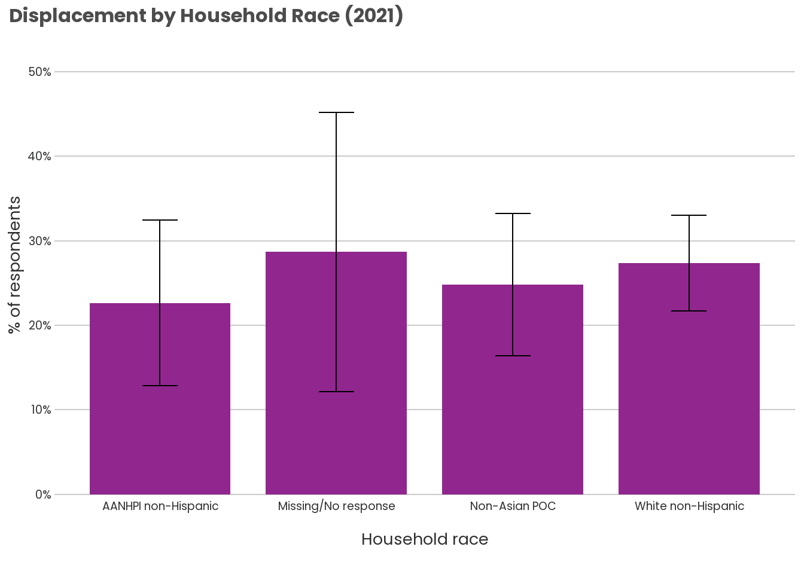
2 races
People of Color, Missing/No response, White non-Hispanic
# checking numbers
# unique(hts_data$hh$hh_race_category_2)
# table(hts_data$hh$hh_race_category_2)
# Calculate a categorical summary, i.e. count/share
disp_2race <- psrc_hts_stat(hts_data,
analysis_unit="hh",
group_vars=c("hh_race_category_2", "displaced"))
# view data
head(dplyr::select(disp_2race[survey_year==focus_year],
-c(survey_year))) hh_race_category_2 displaced count prop prop_moe est
<char> <char> <int> <num> <num> <num>
1: Missing/No response Displaced 15 0.2867783 0.1653634 12379.23
2: Missing/No response Not displaced 32 0.7132217 0.1653634 30787.32
3: POC Displaced 80 0.2392824 0.0641174 66230.85
4: POC Not displaced 230 0.7607176 0.0641174 210558.63
5: White non-Hispanic Displaced 122 0.2736042 0.0567929 94701.26
6: White non-Hispanic Not displaced 283 0.7263958 0.0567929 251423.74
est_moe
<num>
1: 8340.764
2: 13564.454
3: 19989.965
4: 32228.508
5: 21885.151
6: 32342.933# create chart
static_column_chart(filter(disp_2race, survey_year == focus_year,
displaced=="Displaced"),
x = "hh_race_category_2", y = "prop", fill = "displaced",
ylabel = "% of respondents", xlabel = "Household race",
title = paste0("Displacement by Household Race (", focus_year, ")"),
moe = "prop_moe") + theme(
axis.text.x = element_text(size = 14),
axis.text.y = element_text(size = 14),
axis.title.y = element_text(size = 20),
axis.title.x = element_text(size = 20),
plot.title = element_text(size = 24)
)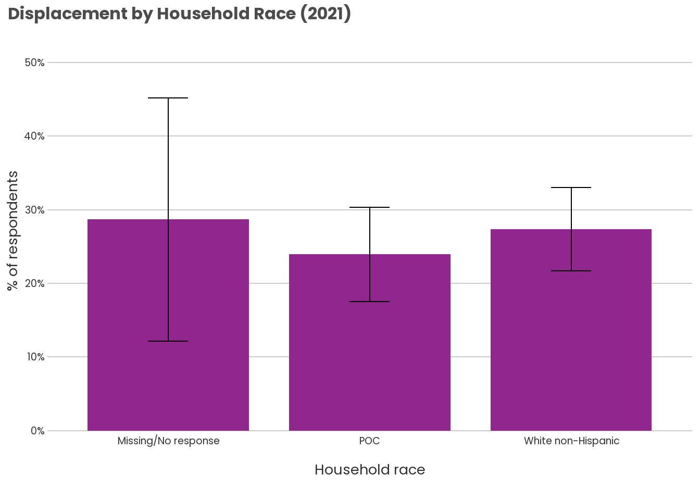
2019
All races
AANHIPI non-Hispanic, Black or African American non-Hispanic, Hispanic, Missing/No response, Some Other Races non-Hispanic, White non-Hispanic
The prop field is weighted and matches the estimate.
# unique(hts_data$hh$hh_race_category)
# table(hts_data$hh$hh_race_category)
# Calculate a categorical summary, i.e. count/share
disp_allrace <- psrc_hts_stat(hts_data,
analysis_unit="hh",
group_vars=c("hh_race_category", "displaced"))
focus_year <- 2019
# view data
head(dplyr::select(disp_allrace[survey_year==focus_year],
-c(survey_year))) hh_race_category displaced count prop
<char> <char> <int> <num>
1: AANHPI non-Hispanic Displaced 45 0.1728389
2: AANHPI non-Hispanic Not displaced 167 0.8271611
3: Black or African American non-Hispanic Displaced 20 0.3580285
4: Black or African American non-Hispanic Not displaced 24 0.6419715
5: Hispanic Displaced 25 0.2447859
6: Hispanic Not displaced 66 0.7552141
prop_moe est est_moe
<num> <num> <num>
1: 0.09430823 11621.659 5824.310
2: 0.09430823 55618.183 23207.168
3: 0.25457153 14497.587 12001.232
4: 0.25457153 25995.243 18762.194
5: 0.17308551 9842.537 7999.926
6: 0.17308551 30366.224 13805.051# create chart
static_column_chart(filter(disp_allrace, survey_year == focus_year,
displaced=="Displaced"),
x = "hh_race_category", y = "prop", fill = "displaced",
ylabel = "% of respondents", xlabel = "Household race",
title = paste0("Displacement by Household Race (", focus_year, ")"),
moe = "prop_moe") + theme(
axis.text.x = element_text(size = 14),
axis.text.y = element_text(size = 14),
axis.title.y = element_text(size = 20),
axis.title.x = element_text(size = 20),
plot.title = element_text(size = 24)
)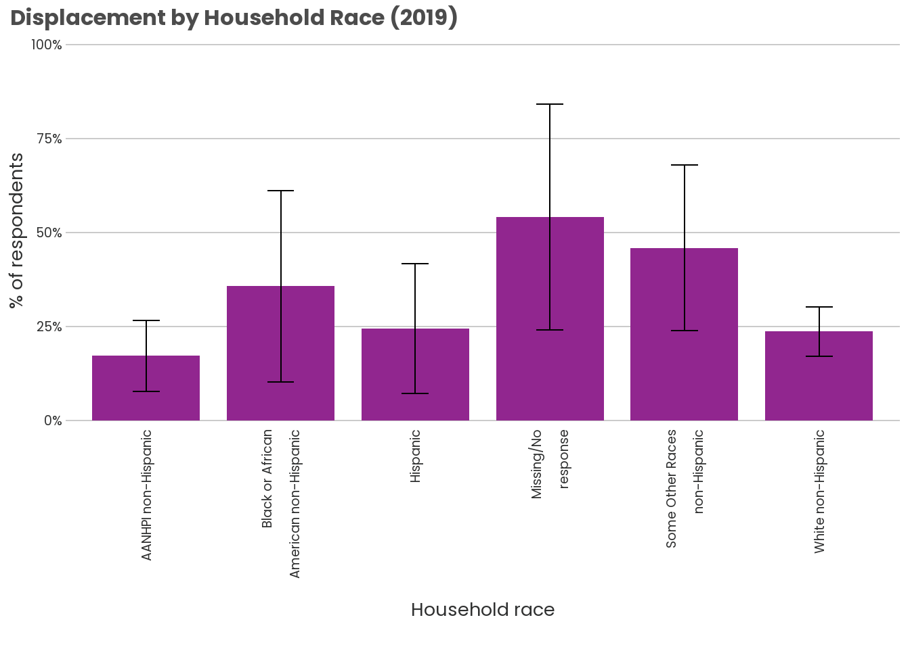
4 races
AANHPI non-Hispanic, Hispanic, Missing/No response, Other POC non-Hispanic, White non-Hispanic
# checking numbers
# unique(hts_data$hh$hh_race_category_4)
# table(hts_data$hh$hh_race_category_4)
# Calculate a categorical summary, i.e. count/share
disp_4race <- psrc_hts_stat(hts_data,
analysis_unit="hh",
group_vars=c("hh_race_category_4", "displaced"))
# view data
head(dplyr::select(disp_4race[survey_year==focus_year],
-c(survey_year))) hh_race_category_4 displaced count prop prop_moe est
<char> <char> <int> <num> <num> <num>
1: AANHPI non-Hispanic Displaced 45 0.1728389 0.09430823 11621.659
2: AANHPI non-Hispanic Not displaced 167 0.8271611 0.09430823 55618.183
3: Hispanic Displaced 25 0.2447859 0.17308551 9842.537
4: Hispanic Not displaced 66 0.7552141 0.17308551 30366.224
5: Missing/No response Displaced 23 0.5423117 0.30073112 37358.378
6: Missing/No response Not displaced 47 0.4576883 0.30073112 31528.902
est_moe
<num>
1: 5824.310
2: 23207.168
3: 7999.926
4: 13805.051
5: 31087.702
6: 26070.948# create chart
static_column_chart(filter(disp_4race, survey_year == focus_year,
displaced=="Displaced"),
x = "hh_race_category_4", y = "prop", fill = "displaced",
ylabel = "% of respondents", xlabel = "Household race",
title = paste0("Displacement by Household Race (", focus_year, ")"),
moe = "prop_moe") + theme(
axis.text.x = element_text(size = 14),
axis.text.y = element_text(size = 14),
axis.title.y = element_text(size = 20),
axis.title.x = element_text(size = 20),
plot.title = element_text(size = 24)
)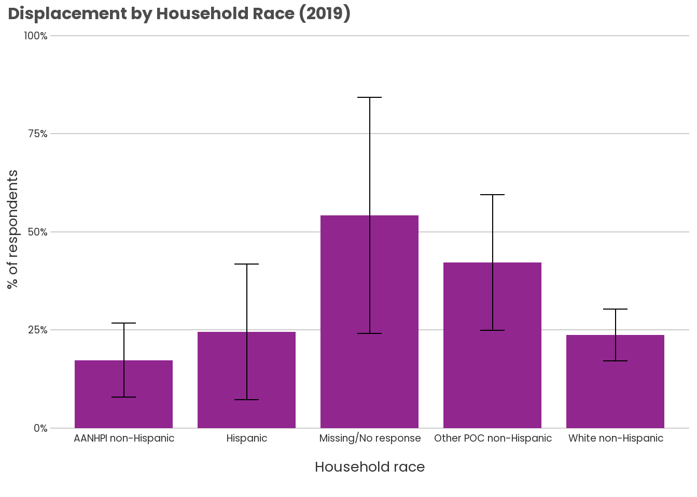
3 races
AANHPI non-Hispanic, Missing/No response, Non-Asian POC, White non-Hispanic
# checking numbers
# unique(hts_data$hh$hh_race_category_3)
# table(hts_data$hh$hh_race_category_3)
# Calculate a categorical summary, i.e. count/share
disp_3race <- psrc_hts_stat(hts_data,
analysis_unit="hh",
group_vars=c("hh_race_category_3", "displaced"))
# view data
head(dplyr::select(disp_3race[survey_year==focus_year],
-c(survey_year))) hh_race_category_3 displaced count prop prop_moe est
<char> <char> <int> <num> <num> <num>
1: AANHPI non-Hispanic Displaced 45 0.1728389 0.09430823 11621.66
2: AANHPI non-Hispanic Not displaced 167 0.8271611 0.09430823 55618.18
3: Missing/No response Displaced 23 0.5423117 0.30073112 37358.38
4: Missing/No response Not displaced 47 0.4576883 0.30073112 31528.90
5: Non-Asian POC Displaced 71 0.3737722 0.13671840 55528.71
6: Non-Asian POC Not displaced 138 0.6262278 0.13671840 93034.27
est_moe
<num>
1: 5824.31
2: 23207.17
3: 31087.70
4: 26070.95
5: 26884.58
6: 28769.86# create chart
static_column_chart(filter(disp_3race, survey_year == focus_year,
displaced=="Displaced"),
x = "hh_race_category_3", y = "prop", fill = "displaced",
ylabel = "% of respondents", xlabel = "Household race",
title = paste0("Displacement by Household Race (", focus_year, ")"),
moe = "prop_moe") + theme(
axis.text.x = element_text(size = 14),
axis.text.y = element_text(size = 14),
axis.title.y = element_text(size = 20),
axis.title.x = element_text(size = 20),
plot.title = element_text(size = 24)
)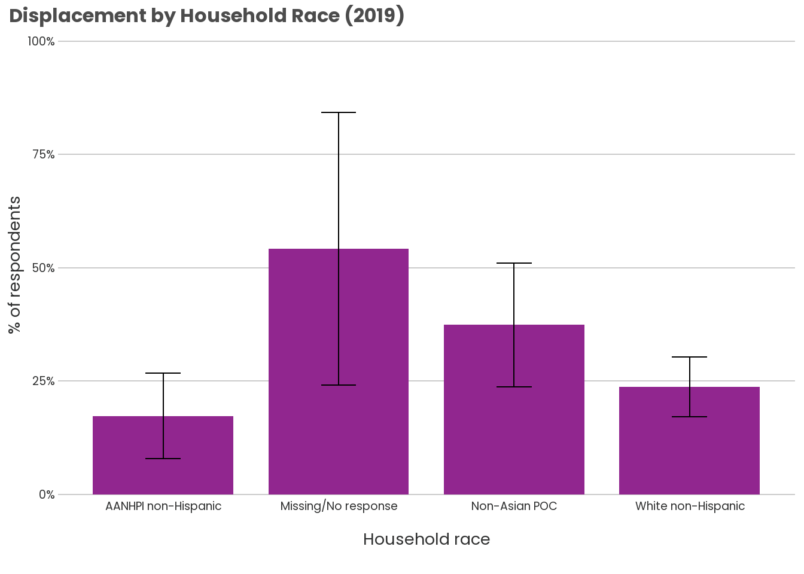
2 races
People of Color, Missing/No response, White non-Hispanic
# checking numbers
# unique(hts_data$hh$hh_race_category_2)
# table(hts_data$hh$hh_race_category_2)
# Calculate a categorical summary, i.e. count/share
disp_2race <- psrc_hts_stat(hts_data,
analysis_unit="hh",
group_vars=c("hh_race_category_2", "displaced"))
# view data
head(dplyr::select(disp_2race[survey_year==focus_year],
-c(survey_year))) hh_race_category_2 displaced count prop prop_moe est
<char> <char> <int> <num> <num> <num>
1: Missing/No response Displaced 23 0.5423117 0.30073112 37358.38
2: Missing/No response Not displaced 47 0.4576883 0.30073112 31528.90
3: POC Displaced 116 0.3111654 0.10454741 67150.37
4: POC Not displaced 305 0.6888346 0.10454741 148652.45
5: White non-Hispanic Displaced 223 0.2373135 0.06560863 81263.50
6: White non-Hispanic Not displaced 591 0.7626865 0.06560863 261167.49
est_moe
<num>
1: 31087.70
2: 26070.95
3: 27408.13
4: 36142.89
5: 22478.28
6: 56456.36# create chart
static_column_chart(filter(disp_2race, survey_year == focus_year,
displaced=="Displaced"),
x = "hh_race_category_2", y = "prop", fill = "displaced",
ylabel = "% of respondents", xlabel = "Household race",
title = paste0("Displacement by Household Race (", focus_year, ")"),
moe = "prop_moe") + theme(
axis.text.x = element_text(size = 14),
axis.text.y = element_text(size = 14),
axis.title.y = element_text(size = 20),
axis.title.x = element_text(size = 20),
plot.title = element_text(size = 24)
)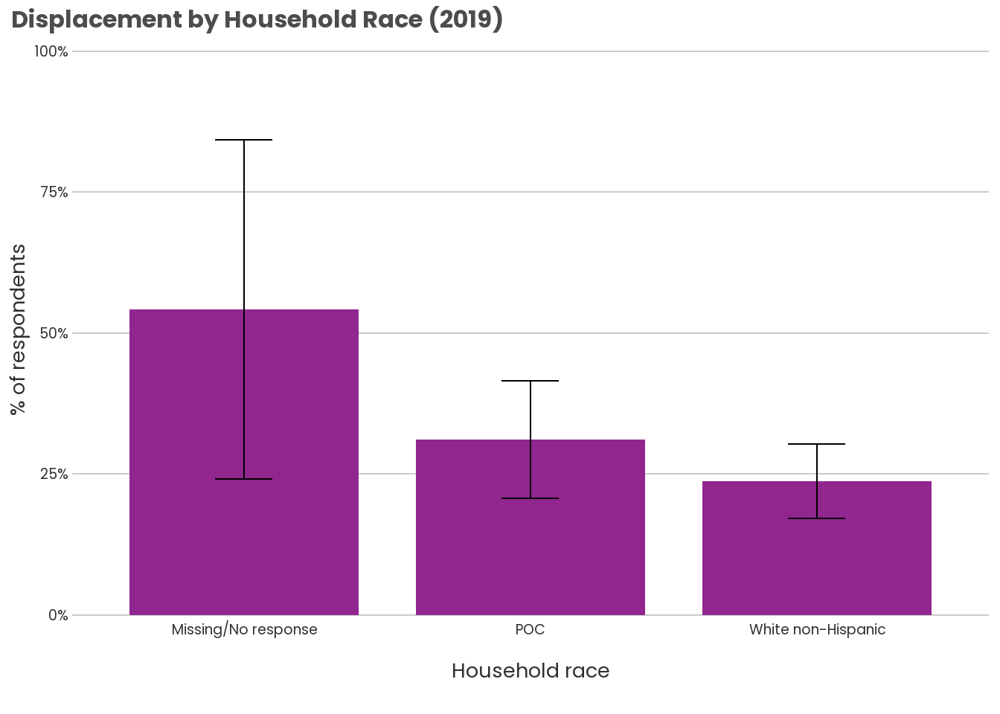
Checking with previous reports
https://www.psrc.org/media/4917 and https://www.psrc.org/media/4916 more documentation on data wiki (http://aws-linux/mediawiki/index.php/Displacement_Analysis)
# prev_res_factors_forced, prev_res_factors_income_change, prev_res_factors_housing_cost, prev_res_factors_community_change
#
movers_df <- hts_data$hh %>%
filter(movers=="Did move",
survey_year==2019,
prev_res_factors_forced=="Selected")
disp_2race_forced <- psrc_hts_stat(hts_data,
analysis_unit="hh",
group_vars=c("movers", "hh_race_category_2", "prev_res_factors_forced"))
disp_2race_income <- psrc_hts_stat(hts_data,
analysis_unit="hh",
group_vars=c("movers","hh_race_category_2", "prev_res_factors_income_change"))
disp_2race_cost <- psrc_hts_stat(hts_data,
analysis_unit="hh",
group_vars=c("movers","hh_race_category_2", "prev_res_factors_housing_cost"))
disp_2race_cost <- psrc_hts_stat(hts_data,
analysis_unit="hh",
group_vars=c("movers","hh_race_category_2", "prev_res_factors_community_change"))
table(hts_data$hh$prev_res_factors_other, hts_data$hh$survey_year)
2019 2021 2023
Not Selected 1131 677 1298
Selected 174 85 94# unique(hh_detail$prev_res_factors_specify)Lifecycle
Household Size
unique(hts_data$hh$hhsize) #13 options[1] 2 people 1 person 3 people 4 people 5 people 6 people 7 people 8 people
13 Levels: 1 person < 2 people < 3 people < 4 people < ... < 13 or more peopleunique(hts_data$hh$hhsize_bin4) #standard groupings: 4 options[1] 2 people 1 person 3 people 4+ people
Levels: 1 person 2 people 3 people 4+ people# Calculate a categorical summary, i.e. count/share
disp_hhsize <- psrc_hts_stat(hts_data,
analysis_unit="hh",
group_vars=c("hhsize_bin4", "displaced"))
focus_year <- 2023
# view data
head(dplyr::select(disp_hhsize[survey_year==focus_year],
-c(survey_year))) hhsize_bin4 displaced count prop prop_moe est est_moe
<fctr> <char> <int> <num> <num> <num> <num>
1: 1 person Displaced 174 0.30184852 0.07589828 49289.67 14496.03
2: 1 person Not displaced 393 0.69815148 0.07589828 114003.07 22368.57
3: 2 people Displaced 124 0.41825370 0.09520801 88924.79 28001.63
4: 2 people Not displaced 371 0.58174630 0.09520801 123684.90 26858.67
5: 3 people Displaced 36 0.09143053 0.05175998 10155.74 5507.40
6: 3 people Not displaced 121 0.90856947 0.05175998 100920.33 30104.35# create chart
static_column_chart(filter(disp_hhsize, survey_year == focus_year,
displaced=="Displaced"),
x = "hhsize_bin4", y = "prop", fill = "displaced",
ylabel = "% of respondents", xlabel = "Household size",
title = paste0("Displacement by Household Size (", focus_year, ")"),
moe = "prop_moe") + theme(
axis.text.x = element_text(size = 14),
axis.text.y = element_text(size = 14),
axis.title.y = element_text(size = 20),
axis.title.x = element_text(size = 20),
plot.title = element_text(size = 24)
)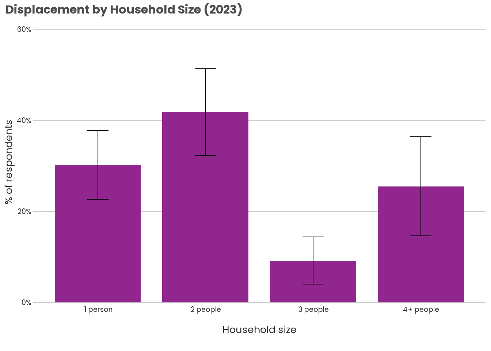
# All years
static_line_chart(filter(disp_hhsize,
displaced=="Displaced"),
x = "survey_year", y = "prop", fill = "hhsize_bin4",
ylabel = "% of respondents", xlabel = "Household size",
title = paste0("Displacement by Household Size")) + theme(
axis.text.x = element_text(size = 14),
axis.text.y = element_text(size = 14),
axis.title.y = element_text(size = 20),
axis.title.x = element_text(size = 20),
plot.title = element_text(size = 24)
)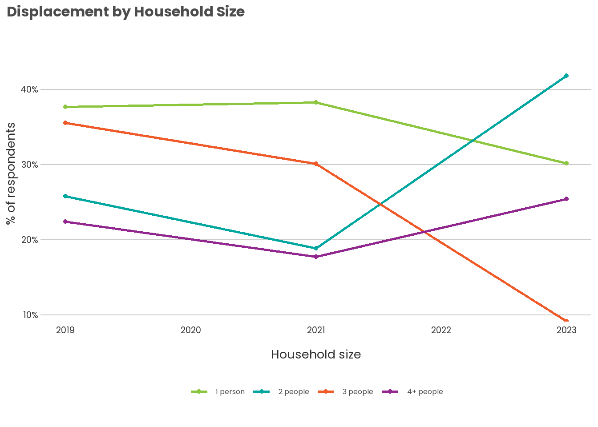
Number of children
# unique(hts_data$hh$numchildren) #original variables
# table(hts_data$hh$numchildren) #original variables
hts_data$hh <- mutate(hts_data$hh,
numchildren_simp= factor(
fcase(grepl("^(3|4|5|6|7|8|9|10|11|12)", numchildren) ,"3+ children",
!is.na(numchildren), as.character(numchildren))))
unique(hts_data$hh$numchildren_simp)[1] 0 children 1 child 2 children 3+ children
Levels: 0 children 1 child 2 children 3+ childrentable(hts_data$hh$numchildren_simp)
0 children 1 child 2 children 3+ children
2797 342 246 74 # Calculate a categorical summary, i.e. count/share
disp_children <- psrc_hts_stat(hts_data,
analysis_unit="hh",
group_vars=c("numchildren_simp", "displaced"))
focus_year <- 2023
# view data
head(dplyr::select(disp_children[survey_year==focus_year],
-c(survey_year))) numchildren_simp displaced count prop prop_moe est
<fctr> <char> <int> <num> <num> <num>
1: 0 children Displaced 317 0.3500081 0.06150616 150517.54
2: 0 children Not displaced 809 0.6499919 0.06150616 279522.60
3: 1 child Displaced 30 0.1280633 0.07354088 13247.48
4: 1 child Not displaced 103 0.8719367 0.07354088 90197.33
5: 2 children Displaced 18 0.1907387 0.14271448 15000.74
6: 2 children Not displaced 83 0.8092613 0.14271448 63644.75
est_moe
<num>
1: 33244.478
2: 38571.519
3: 7564.542
4: 28851.740
5: 12534.823
6: 24388.791# create chart
static_column_chart(filter(disp_children,
survey_year == focus_year,
displaced=="Displaced"),
x = "numchildren_simp", y = "prop", fill = "displaced",
ylabel = "% of respondents", xlabel = "Number of Children",
title = paste0("Displacement by Number of Children (", focus_year, ")"),
moe = "prop_moe") + theme(
axis.text.x = element_text(size = 14),
axis.text.y = element_text(size = 14),
axis.title.y = element_text(size = 20),
axis.title.x = element_text(size = 20),
plot.title = element_text(size = 24)
)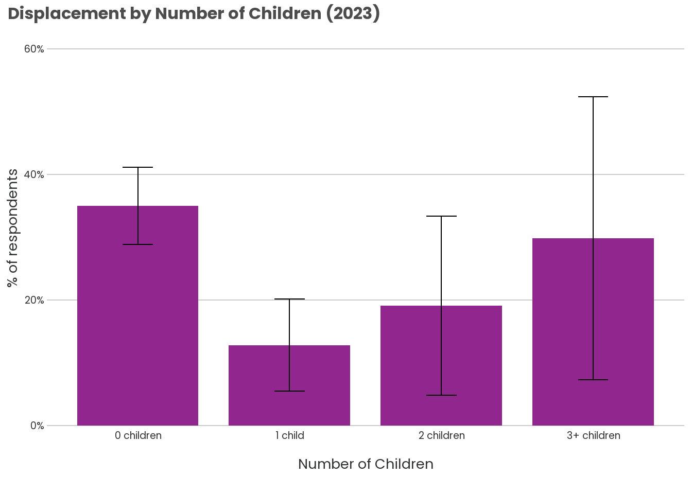
# All years
static_line_chart(filter(disp_children,
displaced=="Displaced"),
x = "survey_year", y = "prop", fill = "numchildren_simp",
ylabel = "% of respondents", xlabel = "Number of Children",
title = paste0("Displacement by Number of Children")) + theme(
axis.text.x = element_text(size = 14),
axis.text.y = element_text(size = 14),
axis.title.y = element_text(size = 20),
axis.title.x = element_text(size = 20),
plot.title = element_text(size = 24)
)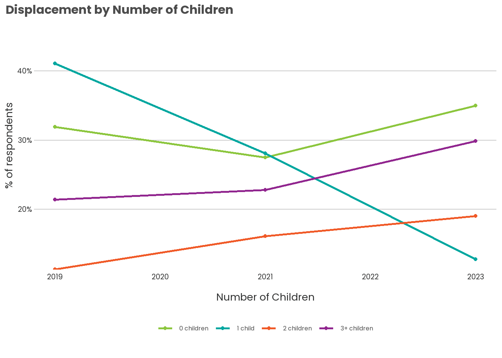
Household Income
# unique(hts_data$hh$hhincome_broad) #original variables
# unique(hts_data$hh$hhincome_bin3) #standard groupings
unique(hts_data$hh$hhincome_bin5) #standard groupings[1] $100,000 or more $50,000-$74,999 Under $25,000
[4] $75,000-$99,999 $25,000-$49,999 Prefer not to answer
6 Levels: Under $25,000 $25,000-$49,999 $50,000-$74,999 ... Prefer not to answer# Calculate a categorical summary, i.e. count/share
disp_inc <- psrc_hts_stat(hts_data,
analysis_unit="hh",
group_vars=c("hhincome_bin5", "displaced"))
focus_year <- 2023
# view data
head(dplyr::select(disp_inc[survey_year==focus_year],
-c(survey_year))) hhincome_bin5 displaced count prop prop_moe est est_moe
<fctr> <char> <int> <num> <num> <num> <num>
1: Under $25,000 Displaced 53 0.2913321 0.1246436 14159.41 6388.28
2: Under $25,000 Not displaced 90 0.7086679 0.1246436 34442.89 13611.21
3: $25,000-$49,999 Displaced 58 0.2929775 0.1216089 30134.39 14939.84
4: $25,000-$49,999 Not displaced 125 0.7070225 0.1216089 72721.25 22213.61
5: $50,000-$74,999 Displaced 59 0.4411259 0.1493935 42675.88 19872.12
6: $50,000-$74,999 Not displaced 131 0.5588741 0.1493935 54067.20 20401.97# create chart
static_column_chart(filter(disp_inc,
survey_year == focus_year,
displaced=="Displaced"),
x = "displaced", y = "prop", fill = "hhincome_bin5",
ylabel = "% of respondents", xlabel = "Household Income",
title = paste0("Displacement by Household Income (", focus_year, ")"),
moe = "prop_moe") + theme(
axis.text.x = element_text(size = 14),
axis.text.y = element_text(size = 14),
axis.title.y = element_text(size = 20),
axis.title.x = element_text(size = 20),
plot.title = element_text(size = 24)
)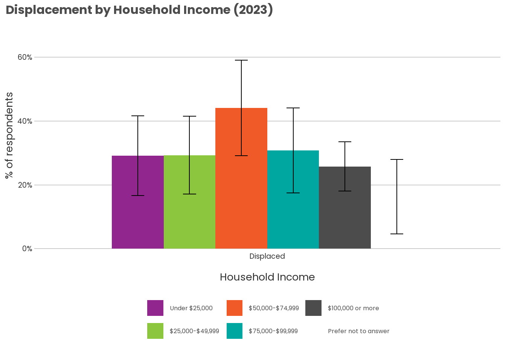
# All years
static_line_chart(filter(disp_inc,
displaced=="Displaced"),
x = "survey_year", y = "prop", fill = "hhincome_bin5",
ylabel = "% of respondents", xlabel = "Household Income",
title = paste0("Displacement by Household Income")) + theme(
axis.text.x = element_text(size = 14),
axis.text.y = element_text(size = 14),
axis.title.y = element_text(size = 20),
axis.title.x = element_text(size = 20),
plot.title = element_text(size = 24)
)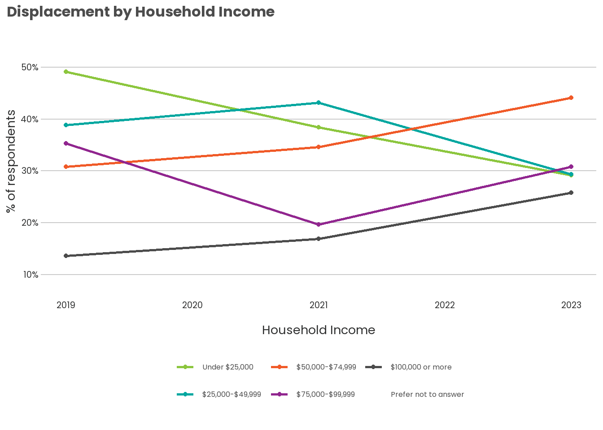
Number of Vehicles
# unique(hts_data$hh$vehicle_count) #original variables
# unique(hts_data$hh$vehicle_count_bin4) #standard groupings
# Calculate a categorical summary, i.e. count/share
disp_veh <- psrc_hts_stat(hts_data,
analysis_unit="hh",
group_vars=c("vehicle_count_bin4", "displaced"))
focus_year <- 2023
# view data
head(dplyr::select(disp_veh[survey_year==focus_year],
-c(survey_year))) vehicle_count_bin4 displaced count prop prop_moe est
<fctr> <char> <int> <num> <num> <num>
1: 0 Displaced 53 0.2668923 0.13991160 10342.21
2: 0 Not displaced 118 0.7331077 0.13991160 28408.30
3: 1 Displaced 217 0.3213265 0.07278422 84798.37
4: 1 Not displaced 526 0.6786735 0.07278422 179102.59
5: 2 Displaced 78 0.2974288 0.08634656 76935.76
6: 2 Not displaced 299 0.7025712 0.08634656 181733.74
est_moe
<num>
1: 5346.321
2: 13937.901
3: 23551.648
4: 30555.422
5: 26713.658
6: 37484.088# create chart
static_column_chart(filter(disp_veh,
survey_year == focus_year,
displaced=="Displaced"),
x = "vehicle_count_bin4", y = "prop", fill = "displaced",
ylabel = "% of respondents", xlabel = "Number of Vehicles",
title = paste0("Displacement by Household Vehicles (", focus_year, ")"),
moe = "prop_moe") + theme(
axis.text.x = element_text(size = 14),
axis.text.y = element_text(size = 14),
axis.title.y = element_text(size = 20),
axis.title.x = element_text(size = 20),
plot.title = element_text(size = 24)
)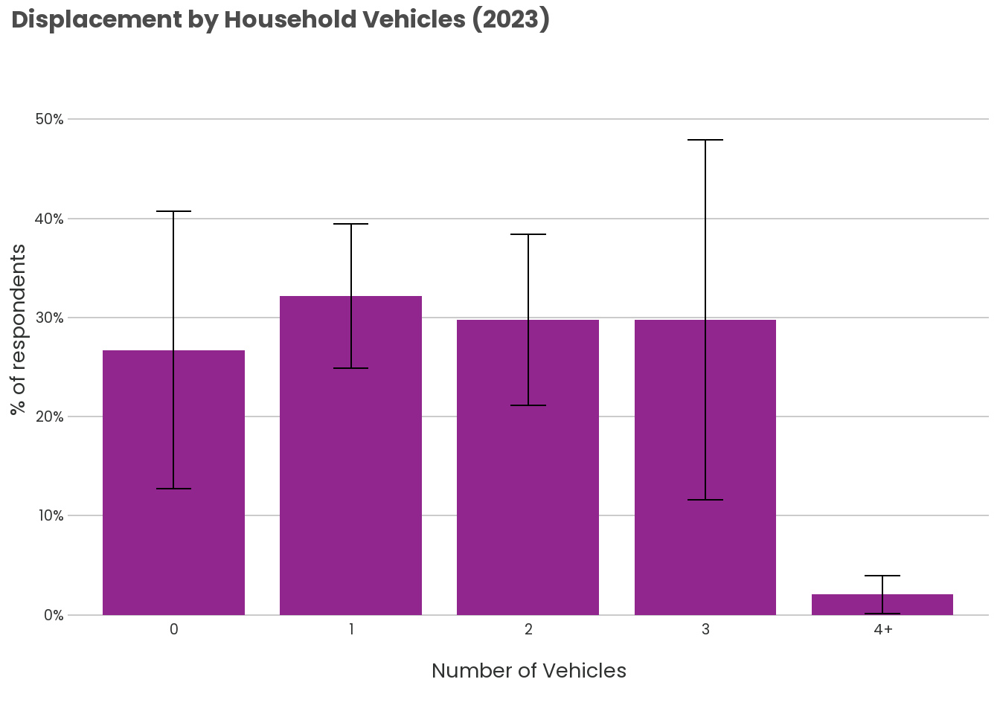
# All years
static_line_chart(filter(disp_veh,
displaced=="Displaced"),
x = "survey_year", y = "prop", fill = "vehicle_count_bin4",
ylabel = "% of respondents", xlabel = "Number of Vehicles",
title = paste0("Displacement by Household Vehicles")) + theme(
axis.text.x = element_text(size = 14),
axis.text.y = element_text(size = 14),
axis.title.y = element_text(size = 20),
axis.title.x = element_text(size = 20),
plot.title = element_text(size = 24)
)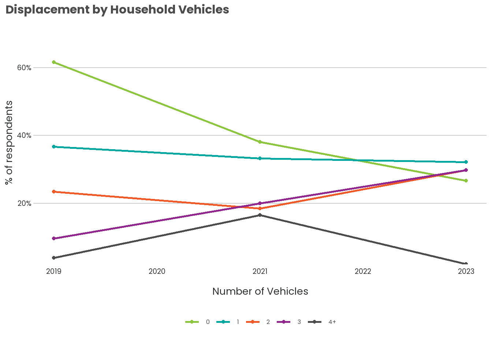
Education
# unique(hts_data$person$education) #original variables
# table(hts_data$person$education) #original variables
# unique(hts_data$person$edu_bin2) #standard groupings
# table(hts_data$person$edu_bin2)
edu_person <- hts_data$person %>%
select(hh_id, edu_bin2) %>%
mutate(edu_num= case_when(edu_bin2=="Less than Bachelors degree"~1,
edu_bin2=="Bachelors or higher"~2,
TRUE~NA)) %>%
group_by(hh_id) %>%
summarise(edu_num_prod = prod(edu_num, na.rm=T)) %>%
mutate(edu_hh_max= case_when(edu_num_prod==1~"Less than Bachelors degree",
edu_num_prod>1~"Bachelors or higher"))
table(edu_person$edu_hh_max)
Bachelors or higher Less than Bachelors degree
9288 2820 hts_data$hh <- hts_data$hh %>%
left_join(edu_person, by="hh_id")
# Calculate a categorical summary, i.e. count/share
disp_edu <- psrc_hts_stat(hts_data,
analysis_unit="hh",
group_vars=c("edu_hh_max", "displaced"))
focus_year <- 2023
# view data
head(dplyr::select(disp_edu[survey_year==focus_year],
-c(survey_year))) edu_hh_max displaced count prop prop_moe
<char> <char> <int> <num> <num>
1: Bachelors or higher Displaced 269 0.2580211 0.05655193
2: Bachelors or higher Not displaced 767 0.7419789 0.05655193
3: Less than Bachelors degree Displaced 102 0.3578126 0.09351444
4: Less than Bachelors degree Not displaced 254 0.6421874 0.09351444
est est_moe
<num> <num>
1: 109171.37 27142.14
2: 313938.81 44004.78
3: 79491.03 26131.76
4: 142667.27 31846.23# create chart
static_column_chart(filter(disp_edu,
survey_year == focus_year,
displaced=="Displaced"),
x = "edu_hh_max", y = "prop", fill = "displaced",
ylabel = "% of respondents", xlabel = "Education Attainment",
title = paste0("Displacement by Household's Highest Education (", focus_year, ")"),
moe = "prop_moe") + theme(
axis.text.x = element_text(size = 14),
axis.text.y = element_text(size = 14),
axis.title.y = element_text(size = 20),
axis.title.x = element_text(size = 20),
plot.title = element_text(size = 24)
)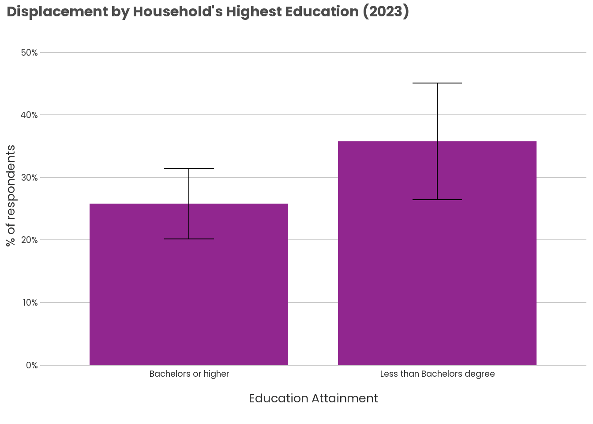
# All years
static_line_chart(filter(disp_edu,
displaced=="Displaced"),
x = "survey_year", y = "prop", fill = "edu_hh_max",
ylabel = "% of respondents", xlabel = "Education Attainment",
title = paste0("Displacement by Household's Highest Education")) + theme(
axis.text.x = element_text(size = 14),
axis.text.y = element_text(size = 14),
axis.title.y = element_text(size = 20),
axis.title.x = element_text(size = 20),
plot.title = element_text(size = 24)
)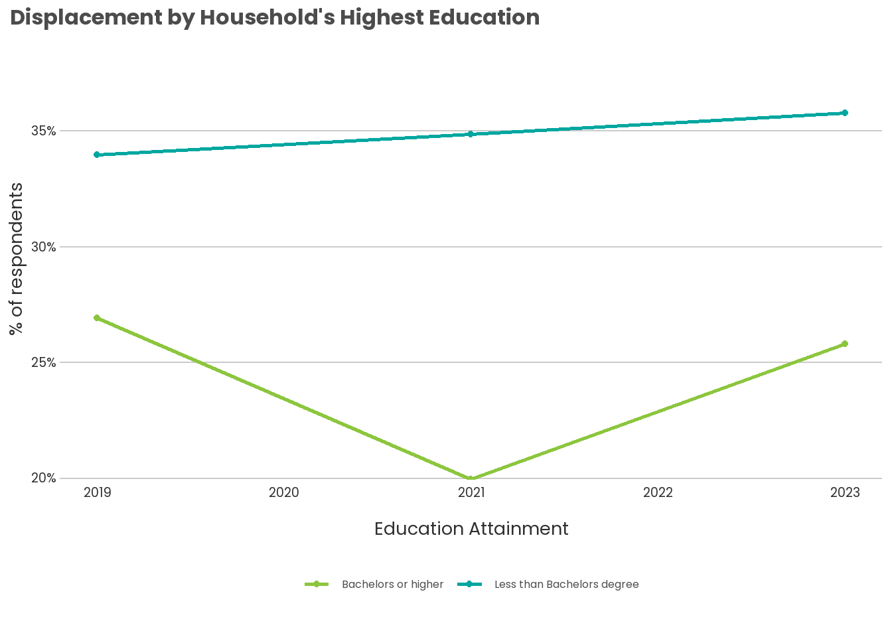
Employment
Number of workers
# unique(hts_data$hh$numworkers) #original variables
# table(hts_data$hh$numworkers)
hts_data$hh <- mutate(hts_data$hh,
num_workers_4bin= factor(
fcase(grepl("^(3|4|5|6|7|8|9|10|11|12|13)", numworkers) ,"3+ workers",
!is.na(numworkers), as.character(numworkers))))
table(hts_data$hh$num_workers_4bin)
0 workers 1 worker 2 workers 3+ workers
493 1619 1226 121 # Calculate a categorical summary, i.e. count/share
disp_workers_4 <- psrc_hts_stat(hts_data,
analysis_unit="hh",
group_vars=c("num_workers_4bin", "displaced"))
focus_year <- 2023
# view data
head(dplyr::select(disp_workers_4[survey_year==focus_year],
-c(survey_year))) num_workers_4bin displaced count prop prop_moe est est_moe
<fctr> <char> <int> <num> <num> <num> <num>
1: 0 workers Displaced 59 0.3707838 0.12250309 30992.40 12764.72
2: 0 workers Not displaced 148 0.6292162 0.12250309 52593.79 16706.61
3: 1 worker Displaced 184 0.2995876 0.07968568 69576.98 22335.01
4: 1 worker Not displaced 464 0.7004124 0.07968568 162665.54 30369.03
5: 2 workers Displaced 114 0.3200338 0.08557977 83705.37 27179.86
6: 2 workers Not displaced 357 0.6799662 0.08557977 177846.26 36443.09# create chart
static_column_chart(filter(disp_workers_4,
survey_year == focus_year,
!is.na(num_workers_4bin),
displaced=="Displaced"),
x = "num_workers_4bin", y = "prop", fill = "displaced",
ylabel = "% of respondents", xlabel = "Workers in Household",
title = paste0("Displacement by Household Employment (", focus_year, ")"),
moe = "prop_moe") + theme(
axis.text.x = element_text(size = 14),
axis.text.y = element_text(size = 14),
axis.title.y = element_text(size = 20),
axis.title.x = element_text(size = 20),
plot.title = element_text(size = 24)
)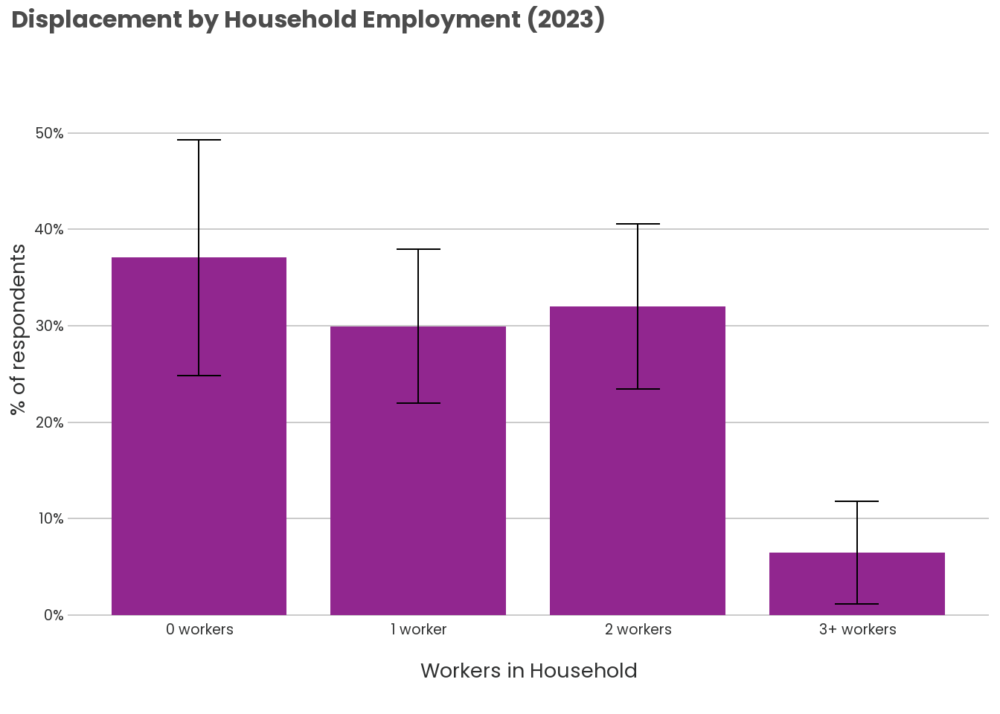
# All years
static_line_chart(filter(disp_workers_4,
!is.na(num_workers_4bin),
displaced=="Displaced"),
x = "survey_year", y = "prop", fill = "num_workers_4bin",
ylabel = "% of respondents", xlabel = "Workers in Household",
title = paste0("Displacement by Household Employment")) + theme(
axis.text.x = element_text(size = 14),
axis.text.y = element_text(size = 14),
axis.title.y = element_text(size = 20),
axis.title.x = element_text(size = 20),
plot.title = element_text(size = 24)
)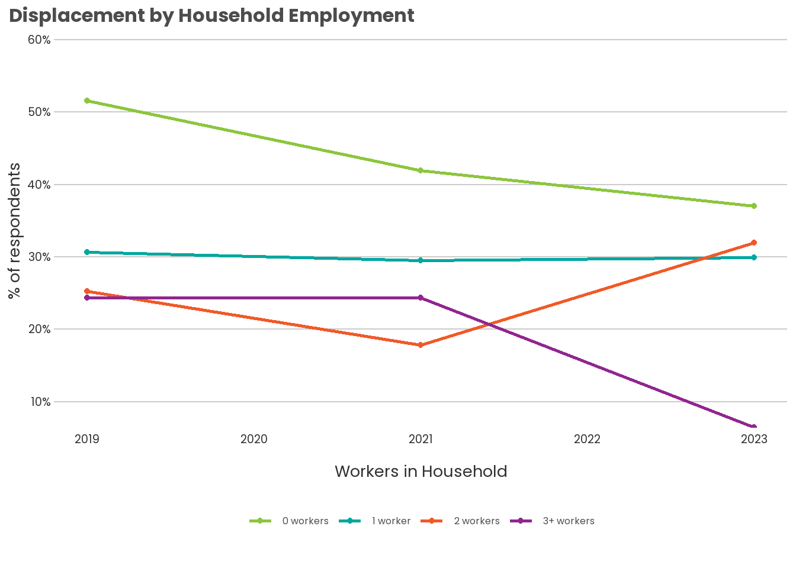
Relationship between Workers and Adults
# unique(hts_data$person$employment) #original variables
# unique(hts_data$person$worker) #standard grouping
# table(hts_data$person$worker)
unique(hts_data$hh$numadults)[1] 2 adults 1 adult 3 adults 4 adults 5 adults 6 adults
13 Levels: 1 adult < 2 adults < 3 adults < 4 adults < 5 adults < ... < 13 or more adultsworker_person <- hts_data$person %>%
select(hh_id, worker) %>%
mutate(worker_num= case_when(worker=="Not worker"~0,
worker=="Worker"~1,
TRUE~NA)) %>%
group_by(hh_id) %>%
summarise(worker_num_sum = sum(worker_num, na.rm=T))
table(worker_person$worker_num_sum)
0 1 2 3 4 5
2705 5467 3664 225 40 7 hts_data$hh <- hts_data$hh %>%
left_join(worker_person, by="hh_id") %>%
# mutate(numadults_simp= factor(
# fcase(grepl("^(6|7|8|9|10|11|12)", numadults) ,"6+ adults",
# !is.na(numadults), as.character(numadults)))) %>%
mutate(numadults_num= as.numeric(substr(numadults,1,2))) %>%
mutate(adult_workers= case_when(worker_num_sum==numadults_num ~ "All workers",
worker_num_sum < numadults_num ~ "Fewer workers",
worker_num_sum > numadults_num ~ "More workers"))
table(hts_data$hh$numadults_num)
1 2 3 4 5 6
1484 1748 159 55 10 3 table(hts_data$hh$adult_workers)
All workers Fewer workers More workers
2370 1088 1 #there is one household with more workers than adults
check <- hts_data$hh %>%
filter(adult_workers=="More workers")
# Calculate a categorical summary, i.e. count/share
disp_worker <- psrc_hts_stat(hts_data,
analysis_unit="hh",
group_vars=c("adult_workers", "displaced"))
focus_year <- 2023
# view data
head(dplyr::select(disp_worker[survey_year==focus_year],
-c(survey_year))) adult_workers displaced count prop prop_moe est
<char> <char> <int> <num> <num> <num>
1: All workers Displaced 242 0.2601448 0.06088365 98730.1240
2: All workers Not displaced 665 0.7398552 0.06088365 280789.7756
3: Fewer workers Displaced 129 0.3385845 0.08176691 89932.2683
4: Fewer workers Not displaced 355 0.6614155 0.08176691 175680.2282
5: More workers Not displaced 1 1.0000000 0.00000000 136.0733
est_moe
<num>
1: 26338.4285
2: 42894.6430
3: 26943.3159
4: 34014.7802
5: 223.8406# create chart
static_column_chart(filter(disp_worker,
survey_year == focus_year,
!is.na(adult_workers),
displaced=="Displaced"),
x = "adult_workers", y = "prop", fill = "displaced",
ylabel = "% of respondents", xlabel = "Workers:Adults in Household",
title = paste0("Displacement by Household Workers:Adults (", focus_year, ")"),
moe = "prop_moe") + theme(
axis.text.x = element_text(size = 14),
axis.text.y = element_text(size = 14),
axis.title.y = element_text(size = 20),
axis.title.x = element_text(size = 20),
plot.title = element_text(size = 24)
)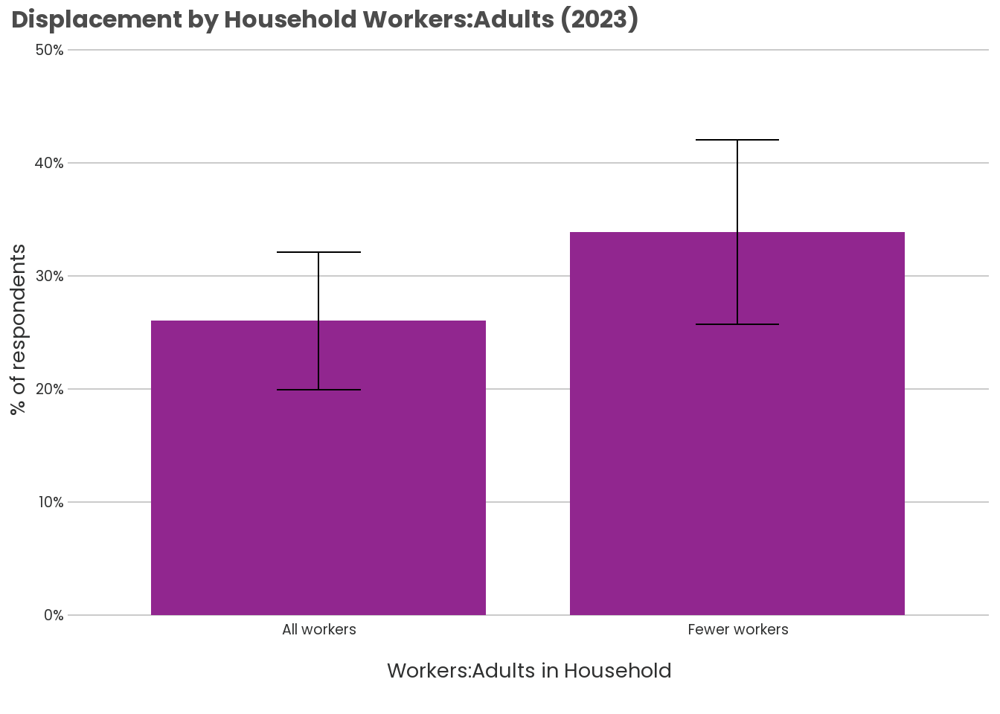
# All years
static_line_chart(filter(disp_worker,
!is.na(adult_workers),
displaced=="Displaced"),
x = "survey_year", y = "prop", fill = "adult_workers",
ylabel = "% of respondents", xlabel = "Workers:Adults in Household",
title = paste0("Displacement by Household Workers:Adults")) + theme(
axis.text.x = element_text(size = 14),
axis.text.y = element_text(size = 14),
axis.title.y = element_text(size = 20),
axis.title.x = element_text(size = 20),
plot.title = element_text(size = 24)
)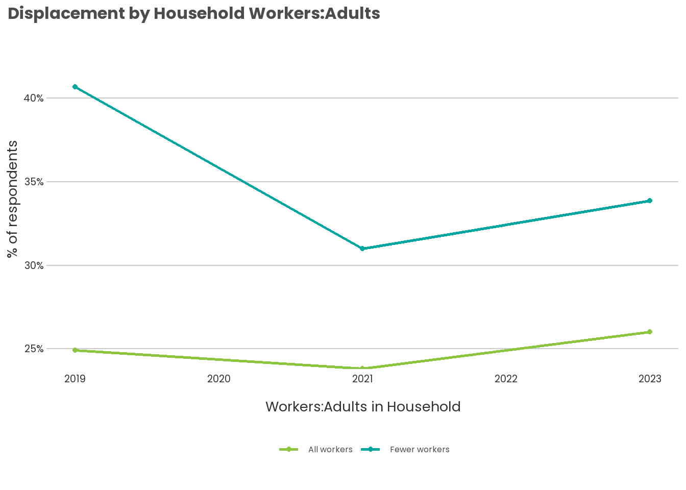
Previous and Current Living
Housing Tenure
Previous
# unique(hts_data$hh$prev_rent_own) #original variables
# need to recreate to match the standard grouping rent_own_bin2 variable
# based on code: https://github.com/psrc/psrc.travelsurvey/blob/main/R/psrc-hts-recode-hh-vars.R
hts_data$hh <- mutate(hts_data$hh,
prev_rent_own_bin2= factor(
fcase(grepl("^Provided", prev_rent_own) ,"Rent",
grepl("^(Other|Prefer)", as.character(prev_rent_own)), NA_character_,
!is.na(rent_own), as.character(prev_rent_own))))
unique(hts_data$hh$prev_rent_own_bin2)[1] Rent Owned/paid mortgage <NA>
Levels: Owned/paid mortgage Renttable(hts_data$hh$prev_rent_own_bin2, hts_data$hh$survey_year)
2019 2021 2023
Owned/paid mortgage 256 154 244
Rent 968 582 1093# Calculate a categorical summary, i.e. count/share
disp_prev_tenure <- psrc_hts_stat(hts_data,
analysis_unit="hh",
group_vars=c("prev_rent_own_bin2", "displaced"))
focus_year <- 2023
# view data
head(dplyr::select(disp_prev_tenure[survey_year==focus_year],
-c(survey_year))) prev_rent_own_bin2 displaced count prop prop_moe est
<fctr> <char> <int> <num> <num> <num>
1: Owned/paid mortgage Displaced 28 0.1846559 0.10431310 23789.78
2: Owned/paid mortgage Not displaced 216 0.8153441 0.10431310 105043.22
3: Rent Displaced 332 0.3213647 0.05725114 154777.66
4: Rent Not displaced 761 0.6786353 0.05725114 326848.55
5: <NA> Displaced 11 0.2900078 0.23599810 10094.96
6: <NA> Not displaced 44 0.7099922 0.23599810 24714.31
est_moe
<num>
1: 15121.572
2: 27458.748
3: 32630.242
4: 44842.143
5: 9891.763
6: 14487.383# create chart
static_column_chart(filter(disp_prev_tenure,
survey_year == focus_year,
!is.na(prev_rent_own_bin2),
displaced=="Displaced"),
x = "prev_rent_own_bin2", y = "prop", fill = "displaced",
ylabel = "% of respondents", xlabel = "Previous Housing Tenure",
title = paste0("Displacement by Previous Housing Tenure (", focus_year, ")"),
moe = "prop_moe") + theme(
axis.text.x = element_text(size = 14),
axis.text.y = element_text(size = 14),
axis.title.y = element_text(size = 20),
axis.title.x = element_text(size = 20),
plot.title = element_text(size = 24)
)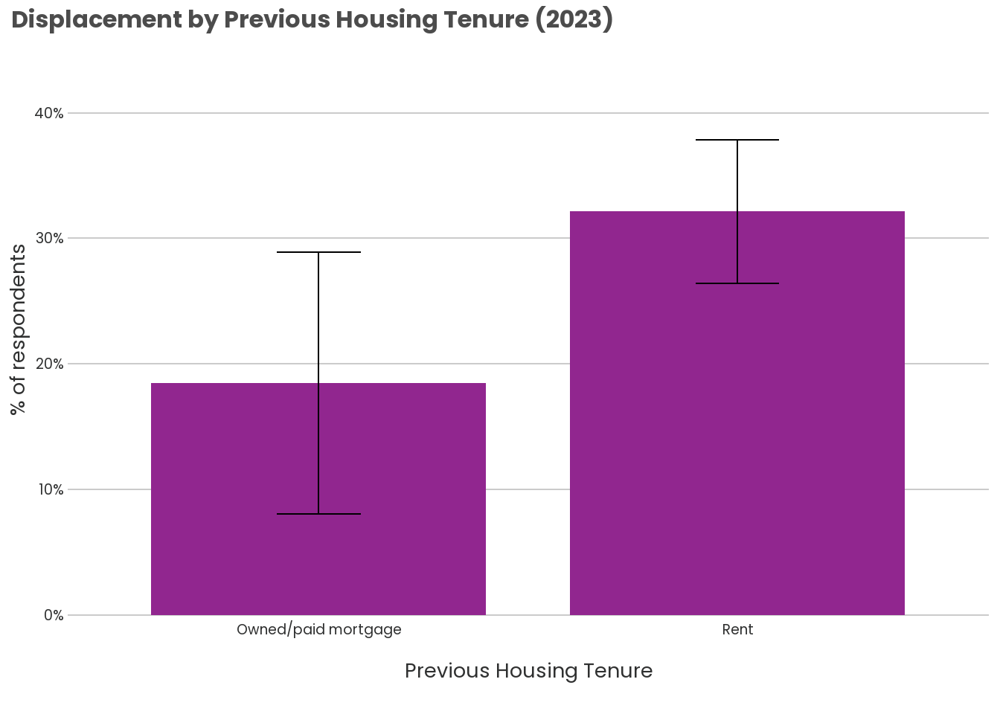
static_facet_column_chart(disp_prev_tenure,
x = "prev_rent_own_bin2", y = "prop", fill = "displaced",
facet="survey_year",
ylabel = "% of respondents", xlabel = "Previous Housing Tenure",
title = "Displacement by Previous Housing Tenure",
moe = "prop_moe", ncol=2, pos="stack") + theme(
axis.text.x = element_text(size = 14),
axis.text.y = element_text(size = 14),
axis.title.y = element_text(size = 20),
axis.title.x = element_text(size = 20),
plot.title = element_text(size = 24)
)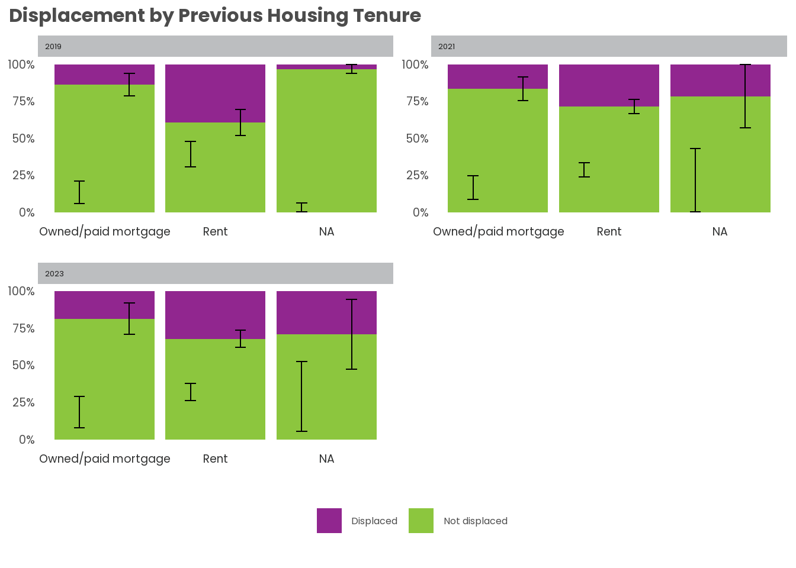
# All years
static_line_chart(filter(disp_prev_tenure,
!is.na(prev_rent_own_bin2),
displaced=="Displaced"),
x = "survey_year", y = "prop", fill = "prev_rent_own_bin2",
ylabel = "% of respondents", xlabel = "Previous Housing Tenure",
title = paste0("Displacement by Previous Housing Tenure")) + theme(
axis.text.x = element_text(size = 14),
axis.text.y = element_text(size = 14),
axis.title.y = element_text(size = 20),
axis.title.x = element_text(size = 20),
plot.title = element_text(size = 24)
)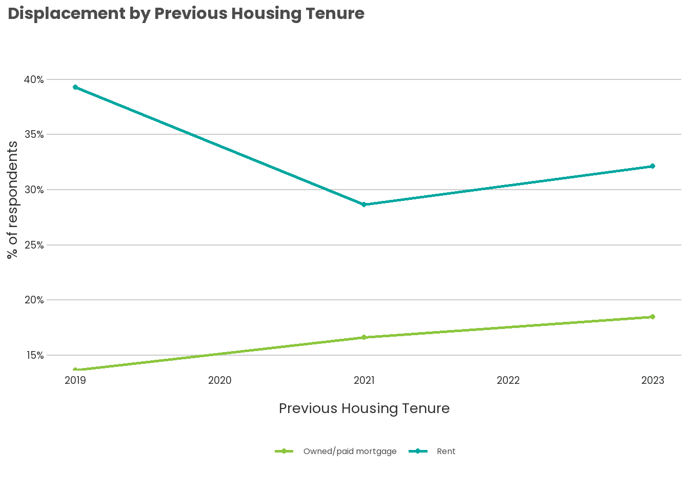
Current
# unique(hts_data$hh$rent_own) #original variables
# unique(hts_data$hh$rent_own_bin2) #standard groupings
table(hts_data$hh$rent_own_bin2, hts_data$hh$survey_year)
2019 2021 2023
Own/paying mortgage 506 295 512
Rent 785 463 845# Calculate a categorical summary, i.e. count/share
disp_current_tenure <- psrc_hts_stat(hts_data,
analysis_unit="hh",
group_vars=c("rent_own_bin2", "displaced"))
focus_year <- 2023
# view data
head(dplyr::select(disp_current_tenure[survey_year==focus_year],
-c(survey_year))) rent_own_bin2 displaced count prop prop_moe est
<fctr> <char> <int> <num> <num> <num>
1: Own/paying mortgage Displaced 87 0.2344276 0.07655673 64632.033
2: Own/paying mortgage Not displaced 425 0.7655724 0.07655673 211069.379
3: Rent Displaced 276 0.3195910 0.06455281 110847.357
4: Rent Not displaced 569 0.6804090 0.06455281 235993.945
5: <NA> Displaced 8 0.5800908 0.30352280 13183.002
6: <NA> Not displaced 27 0.4199092 0.30352280 9542.752
est_moe
<num>
1: 24088.099
2: 39164.213
3: 26619.944
4: 37689.387
5: 11147.683
6: 8695.437# create chart
static_column_chart(filter(disp_current_tenure,
survey_year == focus_year,
!is.na(rent_own_bin2),
displaced=="Displaced"),
x = "rent_own_bin2", y = "prop", fill = "displaced",
ylabel = "% of respondents", xlabel = "Current Housing Tenure",
title = paste0("Displacement by Housing Tenure (", focus_year, ")"),
moe = "prop_moe") + theme(
axis.text.x = element_text(size = 14),
axis.text.y = element_text(size = 14),
axis.title.y = element_text(size = 20),
axis.title.x = element_text(size = 20),
plot.title = element_text(size = 24)
)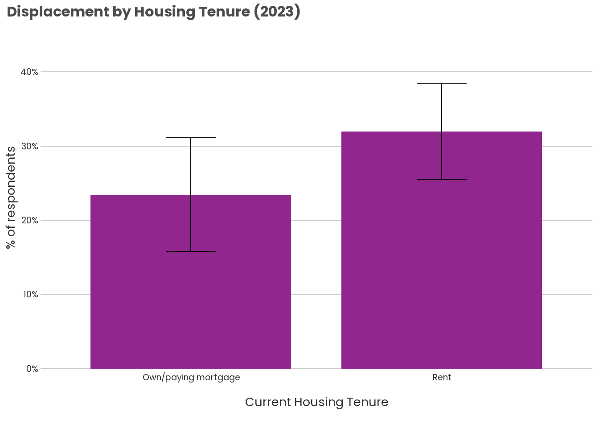
static_facet_column_chart(disp_current_tenure,
x = "rent_own_bin2", y = "prop", fill = "displaced",
facet="survey_year",
ylabel = "% of respondents", xlabel = "Current Housing Tenure",
title = "Displacement by Housing Tenure",
moe = "prop_moe", ncol=2, pos="stack") + theme(
axis.text.x = element_text(size = 14),
axis.text.y = element_text(size = 14),
axis.title.y = element_text(size = 20),
axis.title.x = element_text(size = 20),
plot.title = element_text(size = 24)
)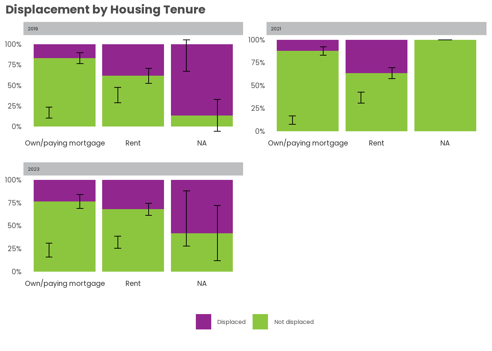
# All years
static_line_chart(filter(disp_current_tenure,
!is.na(rent_own_bin2),
displaced=="Displaced"),
x = "survey_year", y = "prop", fill = "rent_own_bin2",
ylabel = "% of respondents", xlabel = "Current Housing Tenure",
title = paste0("Displacement by Housing Tenure")) + theme(
axis.text.x = element_text(size = 14),
axis.text.y = element_text(size = 14),
axis.title.y = element_text(size = 20),
axis.title.x = element_text(size = 20),
plot.title = element_text(size = 24)
)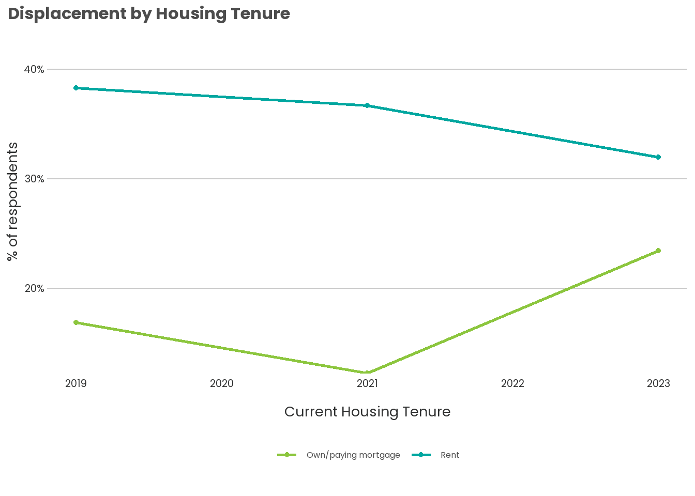
Transition
unique(hts_data$hh$prev_rent_own_bin2)[1] Rent Owned/paid mortgage <NA>
Levels: Owned/paid mortgage Rentunique(hts_data$hh$rent_own_bin2)[1] Rent Own/paying mortgage <NA>
Levels: Own/paying mortgage Rent# table(hts_data$hh$prev_rent_own_bin2)
# table(hts_data$hh$rent_own_bin2)
hts_data$hh <- mutate(hts_data$hh,
res_tenure_transition= case_when(prev_rent_own_bin2=="Rent" &
rent_own_bin2=="Own/paying mortgage" ~ "Rent-Own",
prev_rent_own_bin2=="Owned/paid mortgage" &
rent_own_bin2=="Rent" ~ "Own-Rent",
TRUE~"No change"))
# Calculate a categorical summary, i.e. count/share
disp_tenure_transition <- psrc_hts_stat(hts_data,
analysis_unit="hh",
group_vars=c("res_tenure_transition", "displaced"))
# table(hts_data$hh$res_tenure_transition)
# table(hts_data$hh$res_tenure_transition, hts_data$hh$survey_year)
focus_year <- 2023
# view data
head(dplyr::select(disp_tenure_transition[survey_year==focus_year],
-c(survey_year))) res_tenure_transition displaced count prop prop_moe est
<char> <char> <int> <num> <num> <num>
1: No change Displaced 299 0.2951163 0.05721615 136207.401
2: No change Not displaced 716 0.7048837 0.05721615 325330.664
3: Own-Rent Displaced 6 0.2202468 0.26615990 4289.998
4: Own-Rent Not displaced 50 0.7797532 0.26615990 15188.140
5: Rent-Own Displaced 66 0.2932379 0.10378688 48164.993
6: Rent-Own Not displaced 255 0.7067621 0.10378688 116087.273
est_moe
<num>
1: 30566.459
2: 45782.419
3: 6337.739
4: 6759.260
5: 20567.855
6: 28925.541# create chart
static_column_chart(filter(disp_tenure_transition,
survey_year == focus_year,
displaced=="Displaced"),
x = "res_tenure_transition", y = "prop", fill = "displaced",
ylabel = "% of respondents", xlabel = "Change in Housing Tenure",
title = paste0("Displacement by Change in Housing Tenure (", focus_year, ")"),
moe = "prop_moe") + theme(
axis.text.x = element_text(size = 14),
axis.text.y = element_text(size = 14),
axis.title.y = element_text(size = 20),
axis.title.x = element_text(size = 20),
plot.title = element_text(size = 24)
)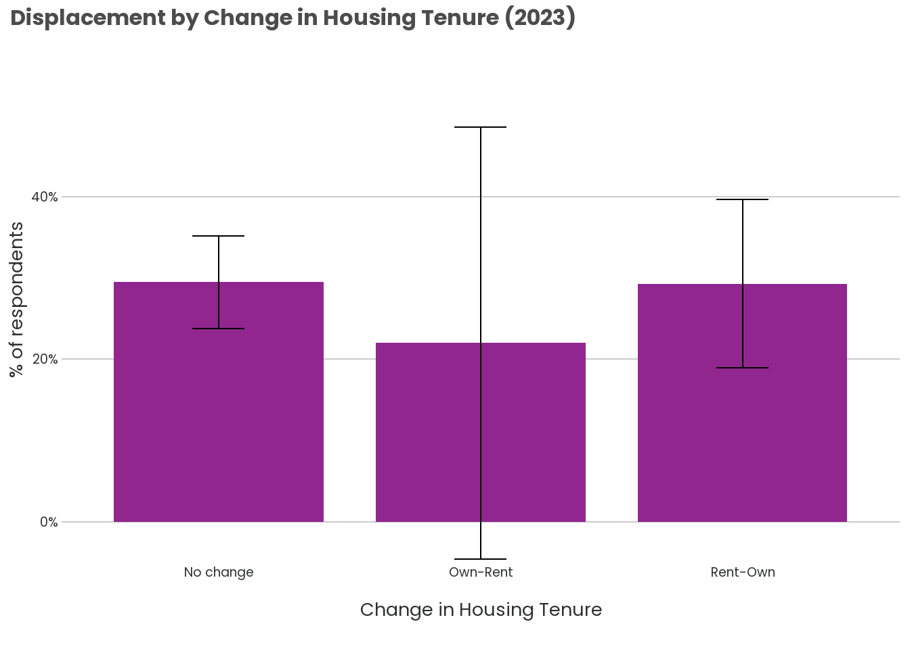
# All years
static_line_chart(filter(disp_tenure_transition,
displaced=="Displaced"),
x = "survey_year", y = "prop", fill = "res_tenure_transition",
ylabel = "% of respondents", xlabel = "Change in Housing Tenure",
title = paste0("Displacement by Change in Housing Tenure")) + theme(
axis.text.x = element_text(size = 14),
axis.text.y = element_text(size = 14),
axis.title.y = element_text(size = 20),
axis.title.x = element_text(size = 20),
plot.title = element_text(size = 24)
)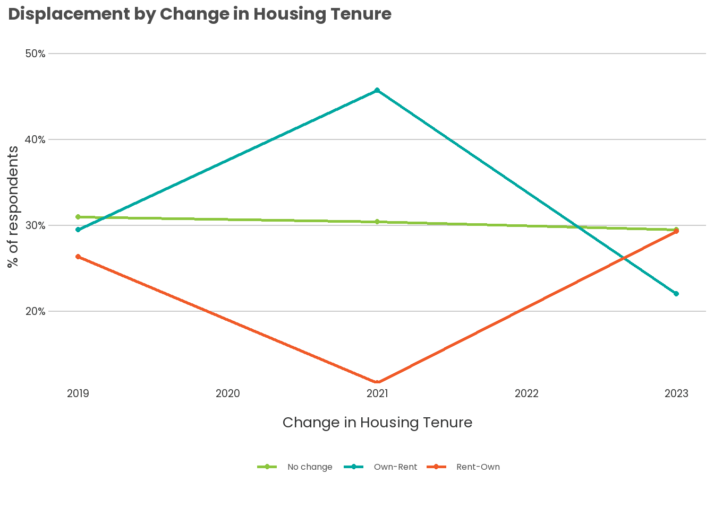
Housing Type
checking the raw data
unique(hts_data$hh$prev_res_type) #original variables[1] Single-family house (detached house)
[2] Building with 4 or more apartments/condos
[3] Building with 3 or fewer apartments/condos
[4] Townhouse (attached house)
[5] Mobile home/trailer
[6] Dorm or institutional housing
[7] Other (including boat, RV, van, etc.)
7 Levels: Single-family house (detached house) < ...table(hts_data$hh$prev_res_type, hts_data$hh$survey_year)
2019 2021 2023
Single-family house (detached house) 439 282 485
Townhouse (attached house) 90 61 104
Building with 3 or fewer apartments/condos 53 36 86
Building with 4 or more apartments/condos 692 349 671
Mobile home/trailer 4 12 14
Dorm or institutional housing 12 7 8
Other (including boat, RV, van, etc.) 15 15 24# Calculate a categorical summary, i.e. count/share
disp_prev_type <- psrc_hts_stat(hts_data,
analysis_unit="hh",
group_vars=c("prev_res_type", "displaced"))
focus_year <- 2023
# view data
head(dplyr::select(disp_prev_type[survey_year==focus_year],
-c(survey_year))) prev_res_type displaced count prop
<ord> <char> <int> <num>
1: Single-family house (detached house) Displaced 97 0.2377997
2: Single-family house (detached house) Not displaced 388 0.7622003
3: Townhouse (attached house) Displaced 20 0.2110276
4: Townhouse (attached house) Not displaced 84 0.7889724
5: Building with 3 or fewer apartments/condos Displaced 27 0.1961329
6: Building with 3 or fewer apartments/condos Not displaced 59 0.8038671
prop_moe est est_moe
<num> <num> <num>
1: 0.07669165 60748.630 22452.154
2: 0.07669165 194712.686 36729.765
3: 0.15903208 10880.577 9343.656
4: 0.15903208 40679.382 16597.080
5: 0.14550734 8543.651 6577.400
6: 0.14550734 35016.873 17781.946# create chart
static_column_chart(filter(disp_prev_type,
survey_year == focus_year,
displaced=="Displaced"),
x = "displaced", y = "prop", fill = "prev_res_type",
ylabel = "% of respondents", xlabel = "Previous Housing Type",
title = paste0("Displacement by Housing Type (", focus_year, ")"),
moe = "prop_moe") + theme(
axis.text.x = element_text(size = 14),
axis.text.y = element_text(size = 14),
axis.title.y = element_text(size = 20),
axis.title.x = element_text(size = 20),
plot.title = element_text(size = 24)
)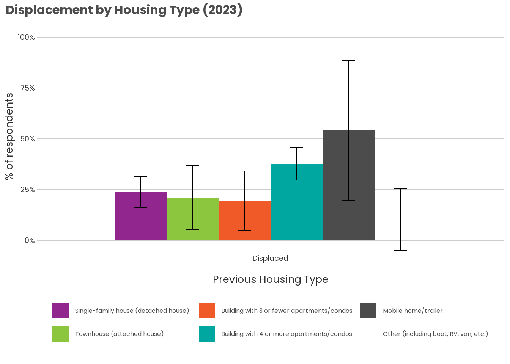
static_line_chart(filter(disp_prev_type,
displaced=="Displaced"),
x = "survey_year", y = "prop", fill = "prev_res_type",
ylabel = "% of respondents", xlabel = "Previous Housing Type",
title = paste0("Displacement by Housing Type")) + theme(
axis.text.x = element_text(size = 14),
axis.text.y = element_text(size = 14),
axis.title.y = element_text(size = 20),
axis.title.x = element_text(size = 20),
plot.title = element_text(size = 24)
)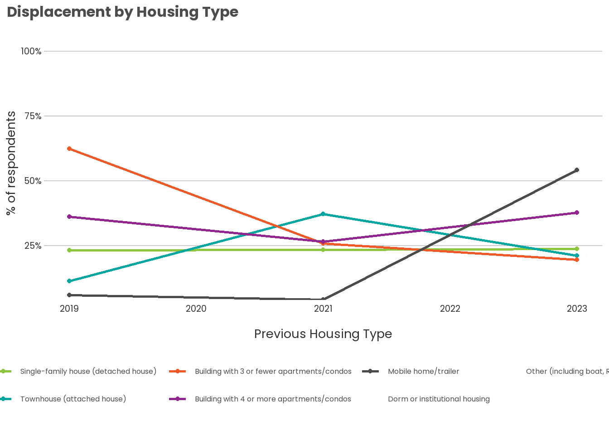
aggregating the housing type
Based on sample size and MOE, it would be best to aggregate certain housing types. There appears to be a statistical difference in displacement rates between families living in buildings with 3 or fewer and 4 or more apartments/condos. Families in townhouses and buildings with 3 or fewer units seem to be displaced at similar rates, so those will be aggregated, although the numbers are still quite small for those two - the majority of people are in single-family houses or in buildings with 4 or more units. All of the remaining options have low sample sizes, so they will be aggregated.
hts_data$hh <- mutate(hts_data$hh,
prev_res_type_simp= case_when(prev_res_type=="Single-family house (detached house)" ~ "Single-family",
prev_res_type=="Townhouse (attached house)" |
prev_res_type=="Building with 3 or fewer apartments/condos" ~ "Lower-density shared walls",
prev_res_type=="Building with 4 or more apartments/condos" ~ "Higher-density shared walls",
TRUE~"Other"))checking against other demographic variables
To explore how this recategorization aligns with other SES
# HOUSING TYPE & RACE (ALL) ----
# Calculate a categorical summary, i.e. count/share
raceall_prev_type_simple <- psrc_hts_stat(hts_data,
analysis_unit="hh",
group_vars=c("prev_res_type_simp","hh_race_category"))
focus_year <- 2023
# view data
head(dplyr::select(raceall_prev_type_simple[survey_year==focus_year],
-c(survey_year))) prev_res_type_simp hh_race_category count
<char> <char> <int>
1: Higher-density shared walls AANHPI non-Hispanic 148
2: Higher-density shared walls Black or African American non-Hispanic 23
3: Higher-density shared walls Hispanic 47
4: Higher-density shared walls Missing/No response 110
5: Higher-density shared walls Some Other Races non-Hispanic 31
6: Higher-density shared walls White non-Hispanic 312
prop prop_moe est est_moe
<num> <num> <num> <num>
1: 0.20935188 0.06420326 52569.48 17633.932
2: 0.04158144 0.02165301 10441.34 5373.719
3: 0.10281461 0.05352260 25817.35 14231.887
4: 0.17641527 0.05999545 44298.91 16330.809
5: 0.13751651 0.06267737 34531.20 17132.666
6: 0.33232028 0.07633300 83447.57 23143.684# create chart
static_column_chart(filter(raceall_prev_type_simple,
survey_year == focus_year),
x = "prev_res_type_simp", y = "prop", fill = "hh_race_category",
ylabel = "% of respondents", xlabel = "Previous Housing Type",
title = paste0("Previous Housing Type by Race/Ethnicity (", focus_year, ")"),
moe = "prop_moe") + theme(
axis.text.x = element_text(size = 14),
axis.text.y = element_text(size = 14),
axis.title.y = element_text(size = 20),
axis.title.x = element_text(size = 20),
plot.title = element_text(size = 24)
)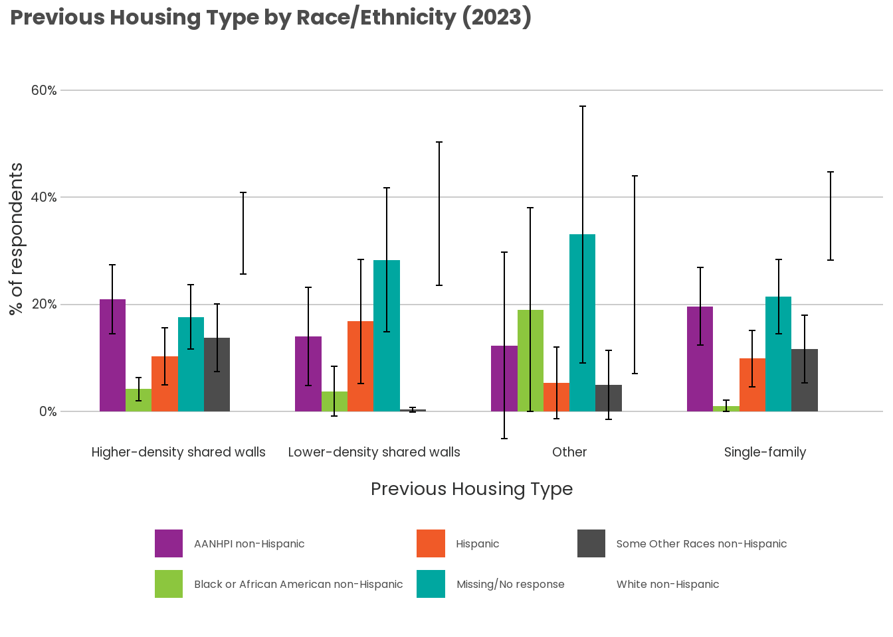
# HOUSING TYPE & INCOME (3 categories) ----
# Calculate a categorical summary, i.e. count/share
inc3_prev_type_simple <- psrc_hts_stat(hts_data,
analysis_unit="hh",
group_vars=c("prev_res_type_simp","hhincome_bin3"))
focus_year <- 2023
# view data
head(dplyr::select(inc3_prev_type_simple[survey_year==focus_year],
-c(survey_year))) prev_res_type_simp hhincome_bin3 count prop prop_moe
<char> <fctr> <int> <num> <num>
1: Higher-density shared walls Less than $50,000 134 0.16670128 0.04793548
2: Higher-density shared walls $50,000-$99,999 182 0.34925027 0.08157950
3: Higher-density shared walls $100,000 or more 317 0.43221963 0.08122196
4: Higher-density shared walls Prefer not to answer 38 0.05182883 0.02690703
5: Lower-density shared walls Less than $50,000 43 0.42713245 0.14370090
6: Lower-density shared walls $50,000-$99,999 45 0.15029318 0.08362145
est est_moe
<num> <num>
1: 41859.67 12078.936
2: 87698.79 26304.456
3: 108532.88 26988.917
4: 13014.52 6743.445
5: 40629.04 18532.537
6: 14295.96 8184.703# create chart
static_column_chart(filter(inc3_prev_type_simple,
survey_year == focus_year),
x = "prev_res_type_simp", y = "prop", fill = "hhincome_bin3",
ylabel = "% of respondents", xlabel = "Previous Housing Type",
title = paste0("Previous Housing Type by Income (", focus_year, ")"),
moe = "prop_moe") + theme(
axis.text.x = element_text(size = 14),
axis.text.y = element_text(size = 14),
axis.title.y = element_text(size = 20),
axis.title.x = element_text(size = 20),
plot.title = element_text(size = 24)
)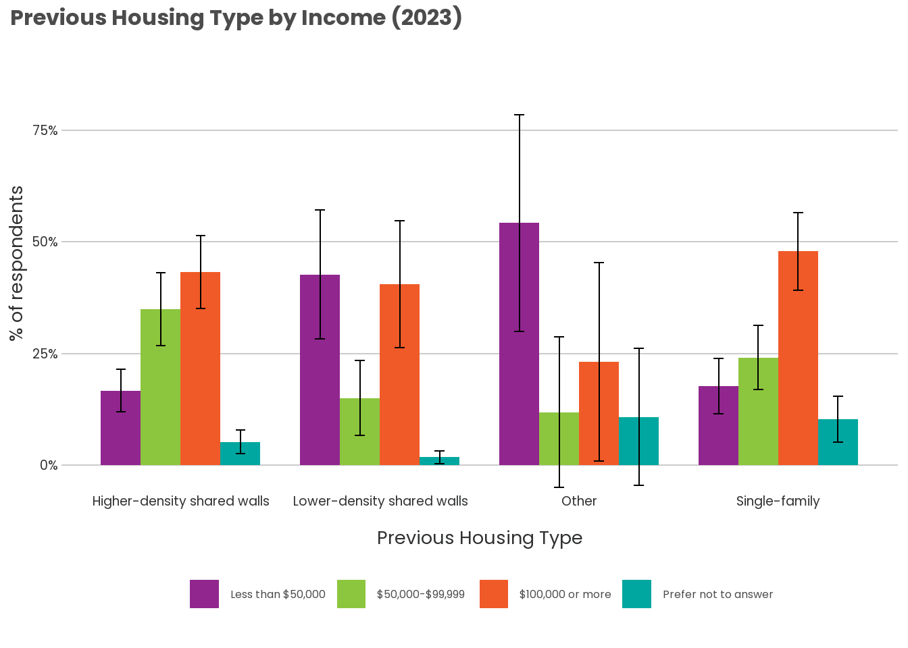
Previous
unique(hts_data$hh$prev_res_type_simp) #aggregated variable[1] "Single-family" "Higher-density shared walls"
[3] "Lower-density shared walls" "Other" # Calculate a categorical summary, i.e. count/share
disp_prev_type_simple <- psrc_hts_stat(hts_data,
analysis_unit="hh",
group_vars=c("prev_res_type_simp", "displaced"))
focus_year <- 2023
# view data
head(dplyr::select(disp_prev_type_simple[survey_year==focus_year],
-c(survey_year))) prev_res_type_simp displaced count prop prop_moe
<char> <char> <int> <num> <num>
1: Higher-density shared walls Displaced 217 0.3773238 0.08058461
2: Higher-density shared walls Not displaced 454 0.6226762 0.08058461
3: Lower-density shared walls Displaced 47 0.2042066 0.10914959
4: Lower-density shared walls Not displaced 143 0.7957934 0.10914959
5: Other Displaced 10 0.3153066 0.21348030
6: Other Not displaced 36 0.6846934 0.21348030
est est_moe
<num> <num>
1: 94748.22 25936.69
2: 156357.64 30203.93
3: 19424.23 11420.29
4: 75696.26 24012.71
5: 13741.32 11119.91
6: 29839.49 16814.62# create chart
static_column_chart(filter(disp_prev_type_simple,
survey_year == focus_year,
displaced=="Displaced"),
x = "prev_res_type_simp", y = "prop", fill = "displaced",
ylabel = "% of respondents", xlabel = "Previous Housing Type",
title = paste0("Displacement by Previous Housing Type (", focus_year, ")"),
moe = "prop_moe") + theme(
axis.text.x = element_text(size = 14),
axis.text.y = element_text(size = 14),
axis.title.y = element_text(size = 20),
axis.title.x = element_text(size = 20),
plot.title = element_text(size = 24)
)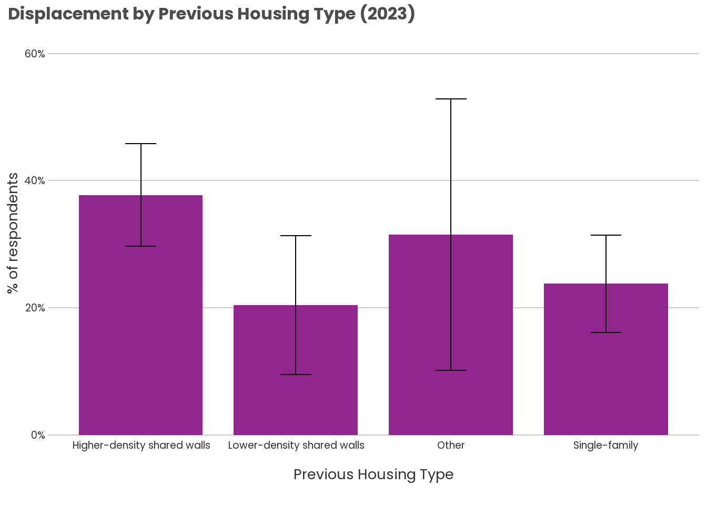
# All years
static_line_chart(filter(disp_prev_type_simple,
displaced=="Displaced"),
x = "survey_year", y = "prop", fill = "prev_res_type_simp",
ylabel = "% of respondents", xlabel = "Previous Housing Type",
title = paste0("Displacement by Previous Housing Type")) + theme(
axis.text.x = element_text(size = 14),
axis.text.y = element_text(size = 14),
axis.title.y = element_text(size = 20),
axis.title.x = element_text(size = 20),
plot.title = element_text(size = 24)
)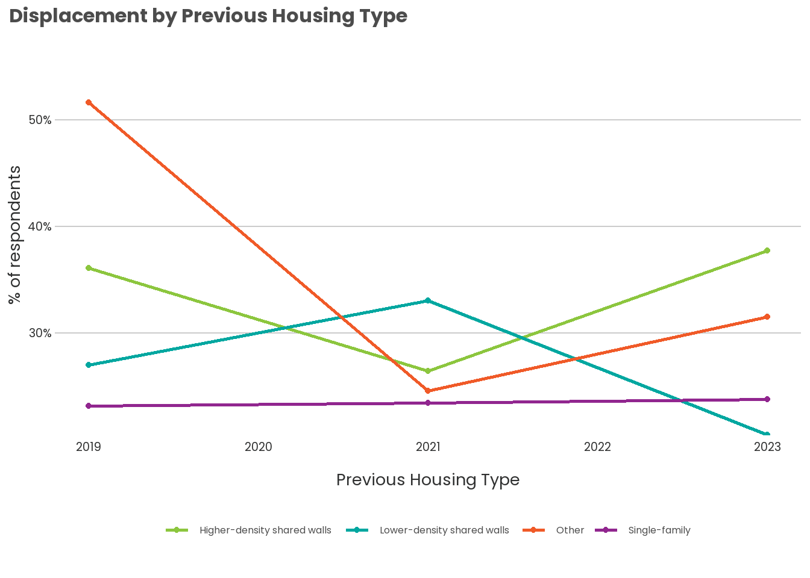
Current
Using the same aggregation categories as with the previous housing type.
# unique(hts_data$hh$prev_res_type) #original variables
# table(hts_data$hh$prev_res_type)
hts_data$hh <- mutate(hts_data$hh,
res_type_simp= case_when(res_type=="Single-family house (detached house)" ~ "Single-family",
res_type=="Townhouse (attached house)" |
res_type=="Building with 3 or fewer apartments/condos" ~ "Lower-density shared walls",
res_type=="Building with 4 or more apartments/condos" ~ "Higher-density shared walls",
TRUE~"Other"))
# Calculate a categorical summary, i.e. count/share
disp_type_simple <- psrc_hts_stat(hts_data,
analysis_unit="hh",
group_vars=c("res_type_simp", "displaced"))
focus_year <- 2023
# view data
head(dplyr::select(disp_type_simple[survey_year==focus_year],
-c(survey_year))) res_type_simp displaced count prop prop_moe
<char> <char> <int> <num> <num>
1: Higher-density shared walls Displaced 217 0.3359305 0.07362217
2: Higher-density shared walls Not displaced 478 0.6640695 0.07362217
3: Lower-density shared walls Displaced 42 0.3153520 0.15050815
4: Lower-density shared walls Not displaced 125 0.6846480 0.15050815
5: Other Displaced 12 0.5121444 0.34716916
6: Other Not displaced 11 0.4878556 0.34716916
est est_moe
<num> <num>
1: 78187.534 20960.657
2: 154561.569 27898.489
3: 23460.891 13942.098
4: 50934.996 18365.943
5: 4899.958 5170.266
6: 4667.574 4219.468# create chart
static_column_chart(filter(disp_type_simple,
survey_year == focus_year,
displaced=="Displaced"),
x = "res_type_simp", y = "prop", fill = "displaced",
ylabel = "% of respondents", xlabel = "Current Housing Type",
title = paste0("Displacement by Current Housing Type (", focus_year, ")"),
moe = "prop_moe") + theme(
axis.text.x = element_text(size = 14),
axis.text.y = element_text(size = 14),
axis.title.y = element_text(size = 20),
axis.title.x = element_text(size = 20),
plot.title = element_text(size = 24)
)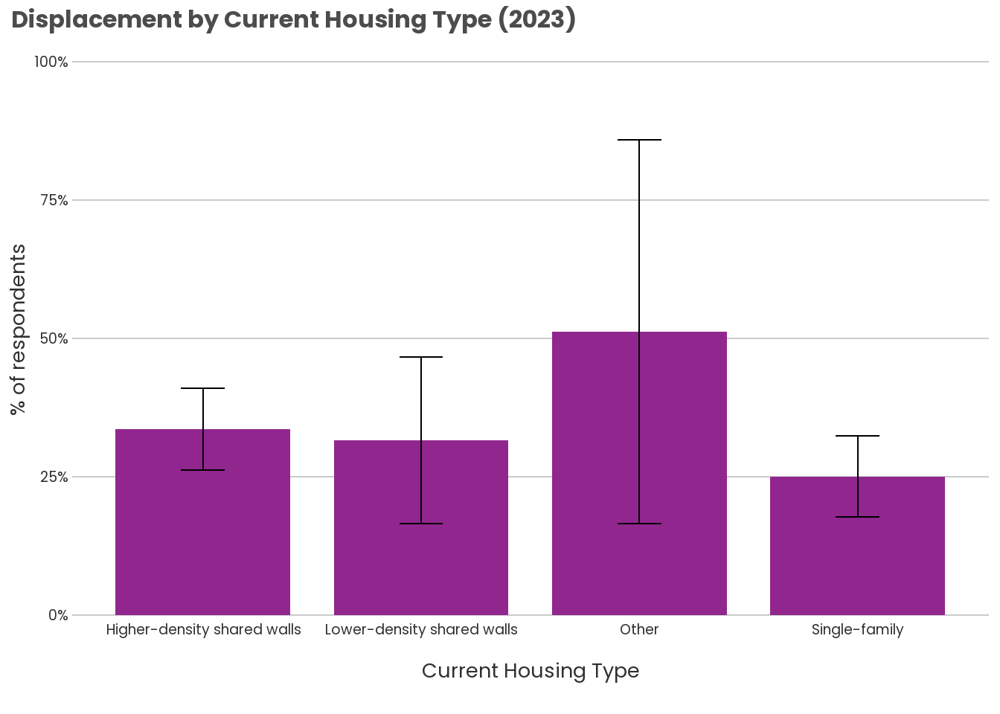
# All years
static_line_chart(filter(disp_type_simple,
displaced=="Displaced"),
x = "survey_year", y = "prop", fill = "res_type_simp",
ylabel = "% of respondents", xlabel = "Current Housing Type",
title = paste0("Displacement by Current Housing Type")) + theme(
axis.text.x = element_text(size = 14),
axis.text.y = element_text(size = 14),
axis.title.y = element_text(size = 20),
axis.title.x = element_text(size = 20),
plot.title = element_text(size = 24)
)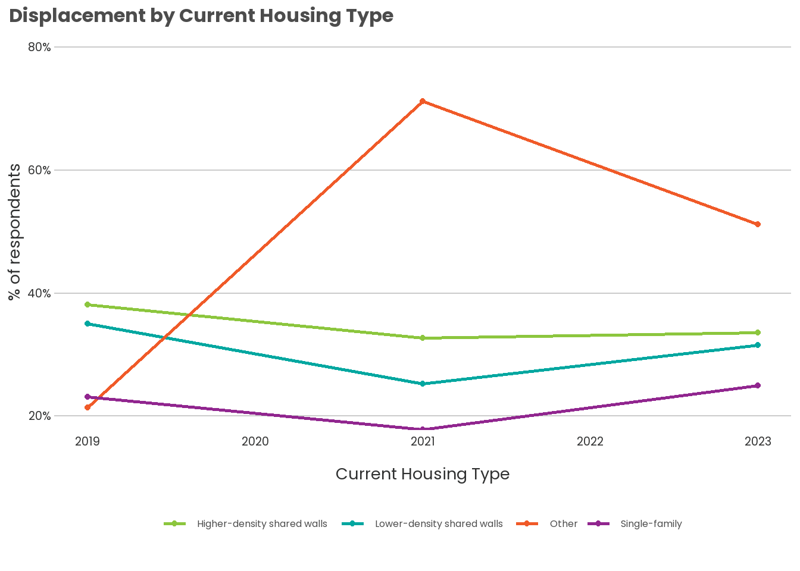
Transition
Using the same aggregation categories as with the previous housing type. “Other” == Dorm or institutional housing; Mobile home/trailer; Other (including boat, RV, van, etc.)
# unique(hts_data$hh$prev_res_type_simp) #original variables
# unique(hts_data$hh$res_type_simp)
# table(hts_data$hh$prev_res_type_simp)
hts_data$hh <- mutate(hts_data$hh,
prev_res_type_num= case_when(prev_res_type_simp=="Single-family" ~1,
prev_res_type_simp=="Lower-density shared walls" ~2,
prev_res_type_simp=="Higher-density shared walls" ~3,
prev_res_type_simp=="Other" ~4),
res_type_num= case_when(res_type_simp== "Single-family" ~1,
res_type_simp== "Lower-density shared walls" ~2,
res_type_simp== "Higher-density shared walls" ~3,
res_type_simp== "Other" ~4),
res_type_transition= case_when(prev_res_type_num==res_type_num~"No change",
prev_res_type_num>res_type_num~"More space, less density",
prev_res_type_num<res_type_num~"Less space, higher density"))
table(hts_data$hh$res_type_transition)
Less space, higher density More space, less density
823 829
No change
1807 # Calculate a categorical summary, i.e. count/share
disp_type_transition <- psrc_hts_stat(hts_data,
analysis_unit="hh",
group_vars=c("res_type_transition", "displaced"))
focus_year <- 2023
# view data
head(dplyr::select(disp_type_transition[survey_year==focus_year],
-c(survey_year))) res_type_transition displaced count prop prop_moe
<char> <char> <int> <num> <num>
1: Less space, higher density Displaced 77 0.3221808 0.11087370
2: Less space, higher density Not displaced 233 0.6778192 0.11087370
3: More space, less density Displaced 82 0.3091346 0.09427670
4: More space, less density Not displaced 296 0.6908654 0.09427670
5: No change Displaced 212 0.2703460 0.06656369
6: No change Not displaced 492 0.7296540 0.06656369
est est_moe
<num> <num>
1: 36962.89 16343.25
2: 77764.25 18713.24
3: 65907.95 24435.29
4: 147293.49 32913.30
5: 85791.56 23780.01
6: 231548.33 40564.73# create chart
static_column_chart(filter(disp_type_transition,
survey_year == focus_year,
displaced=="Displaced"),
x = "res_type_transition", y = "prop", fill = "displaced",
ylabel = "% of respondents", xlabel = "Change in Housing Type",
title = paste0("Displacement by Change in Housing Type (", focus_year, ")"),
moe = "prop_moe") + theme(
axis.text.x = element_text(size = 14),
axis.text.y = element_text(size = 14),
axis.title.y = element_text(size = 20),
axis.title.x = element_text(size = 20),
plot.title = element_text(size = 24)
)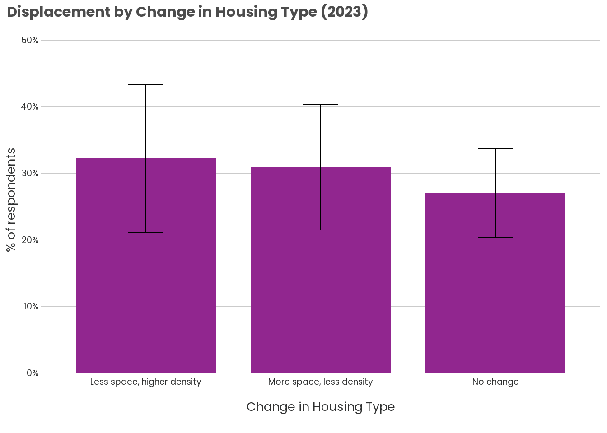
# All years
static_line_chart(filter(disp_type_transition,
displaced=="Displaced"),
x = "survey_year", y = "prop", fill = "res_type_transition",
ylabel = "% of respondents", xlabel = "Change in Housing Type",
title = paste0("Displacement by Change in Housing Type")) + theme(
axis.text.x = element_text(size = 14),
axis.text.y = element_text(size = 14),
axis.title.y = element_text(size = 20),
axis.title.x = element_text(size = 20),
plot.title = element_text(size = 24)
)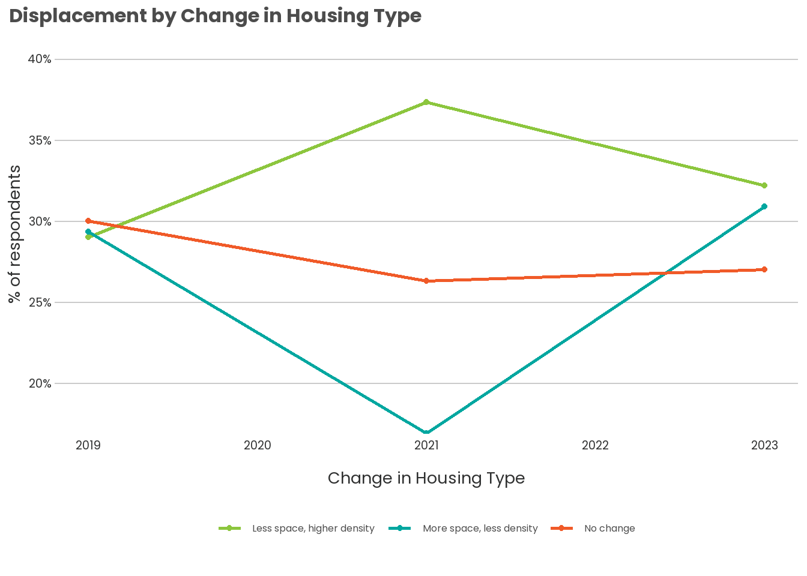
Spatial Patterns
RGCs
There is no 2023 data for previous home location, so this will be based on current home location.
# table(hts_data$hh$prev_home_rgcname, hts_data$hh$survey_year) #original variables
# table(hts_data$hh$home_rgcname, hts_data$hh$survey_year) #original variables
hts_data$hh <- mutate(hts_data$hh,
prev_RGC= case_when(prev_home_rgcname=="Not RGC" ~ "Not RGC",
TRUE~"RGC"),
RGC= case_when(home_rgcname== "Not RGC" ~ "Not RGC",
TRUE~"RGC"))
table(hts_data$hh$prev_RGC, hts_data$hh$survey_year)
2019 2021 2023
Not RGC 0 635 0
RGC 1305 127 1392table(hts_data$hh$RGC, hts_data$hh$survey_year)
2019 2021 2023
Not RGC 806 641 1081
RGC 499 121 311# Calculate a categorical summary, i.e. count/share
disp_rgc <- psrc_hts_stat(hts_data,
analysis_unit="hh",
group_vars=c("RGC", "res_type_simp", "displaced"))
focus_year <- 2023
# view data
head(dplyr::select(disp_rgc[survey_year==focus_year],
-c(survey_year))) RGC res_type_simp displaced count prop prop_moe
<char> <char> <char> <int> <num> <num>
1: Not RGC Higher-density shared walls Displaced 124 0.3407238 0.09361939
2: Not RGC Higher-density shared walls Not displaced 284 0.6592762 0.09361939
3: Not RGC Lower-density shared walls Displaced 39 0.3093886 0.15298982
4: Not RGC Lower-density shared walls Not displaced 117 0.6906114 0.15298982
5: Not RGC Other Displaced 11 0.5122680 0.34918786
6: Not RGC Other Not displaced 10 0.4877320 0.34918786
est est_moe
<num> <num>
1: 54975.562 18808.346
2: 106373.803 24037.184
3: 22604.601 13886.196
4: 50457.572 18363.193
5: 4872.359 5170.067
6: 4638.989 4219.324# create chart
static_column_chart(filter(disp_rgc,
survey_year == focus_year,
displaced=="Displaced"),
x = "res_type_simp", y = "prop", fill = "RGC",
#facet="RGC", pos="stack",
ylabel = "% of respondents", xlabel = "Home Location",
title = paste0("Displacement by Location in RGC (", focus_year, ")"),
moe = "prop_moe") + theme(
axis.text.x = element_text(size = 14),
axis.text.y = element_text(size = 14),
axis.title.y = element_text(size = 20),
axis.title.x = element_text(size = 20),
plot.title = element_text(size = 24)
)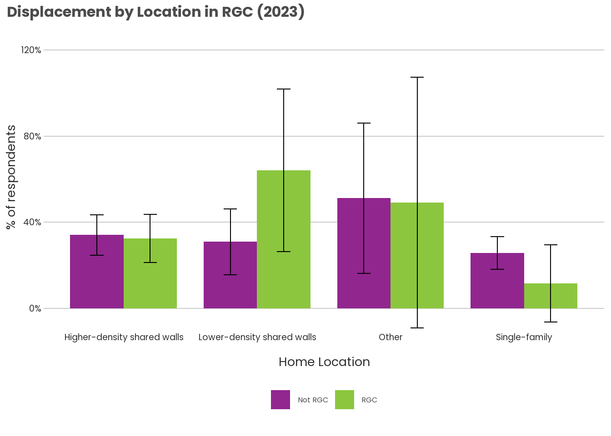
# All years
static_line_chart(filter(disp_rgc,
displaced=="Displaced",
RGC=="RGC"),
x = "survey_year", y = "prop", fill = "res_type_simp",
#facet="RGC", pos="stack",
ylabel = "% of respondents", xlabel = "Home Location",
title = paste0("Displacement by Location in RGC")) + theme(
axis.text.x = element_text(size = 14),
axis.text.y = element_text(size = 14),
axis.title.y = element_text(size = 20),
axis.title.x = element_text(size = 20),
plot.title = element_text(size = 24)
)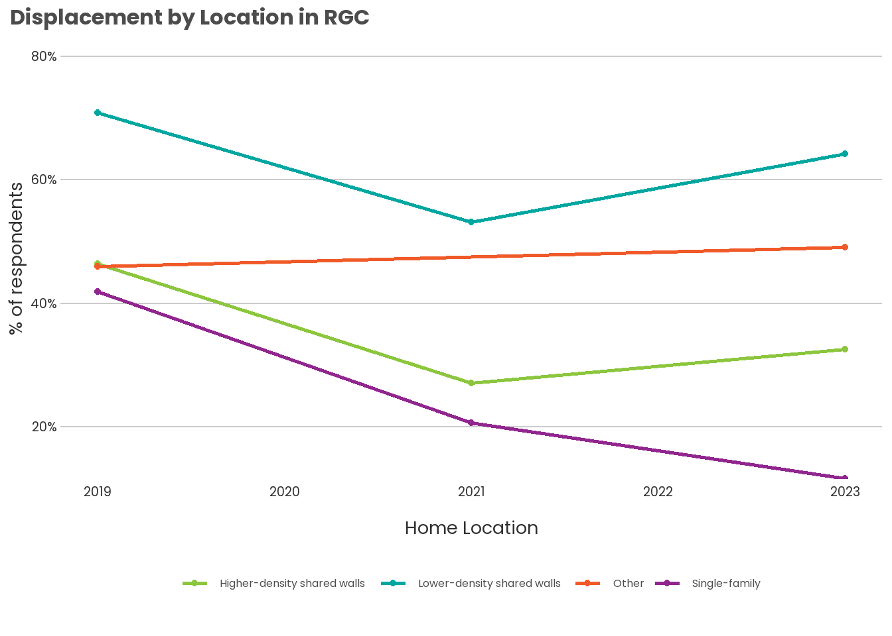
Counties
# unique(hts_data$hh$home_county) #original variables
# table(hts_data$hh$home_county)
# Calculate a categorical summary, i.e. count/share
disp_county <- psrc_hts_stat(hts_data,
analysis_unit="hh",
group_vars=c("home_county", "displaced"))
focus_year <- 2023
# view data
head(dplyr::select(disp_county[survey_year==focus_year],
-c(survey_year))) home_county displaced count prop prop_moe est est_moe
<ord> <char> <int> <num> <num> <num> <num>
1: King County Displaced 265 0.3062771 0.06330365 107300.66 26139.206
2: King County Not displaced 745 0.6937229 0.06330365 243037.80 33628.130
3: Kitsap County Displaced 26 0.4966879 0.22225130 16705.39 12105.044
4: Kitsap County Not displaced 47 0.5033121 0.22225130 16928.19 7422.724
5: Pierce County Displaced 38 0.2182520 0.11002418 29175.71 15683.291
6: Pierce County Not displaced 99 0.7817480 0.11002418 104503.27 29783.378# create chart
static_column_chart(filter(disp_county,
survey_year == focus_year,
displaced=="Displaced"),
x = "displaced", y = "prop", fill = "home_county",
ylabel = "% of respondents", #xlabel = "Home County",
title = paste0("Displacement by County (", focus_year, ")"),
moe = "prop_moe") + theme(
axis.text.x = element_text(size = 14),
axis.text.y = element_text(size = 14),
axis.title.y = element_text(size = 20),
axis.title.x = element_text(size = 20),
plot.title = element_text(size = 24)
)# All years
static_line_chart(filter(disp_county,
displaced=="Displaced"),
x = "survey_year", y = "prop", fill = "home_county",
ylabel = "% of respondents", #xlabel = "Home County",
title = paste0("Displacement by County")) + theme(
axis.text.x = element_text(size = 14),
axis.text.y = element_text(size = 14),
axis.title.y = element_text(size = 20),
axis.title.x = element_text(size = 20),
plot.title = element_text(size = 24)
)Regional Geographies
All
# regional geography layer
region_geo.url <- "https://services6.arcgis.com/GWxg6t7KXELn1thE/arcgis/rest/services/Regional_Geographies/FeatureServer/0/query?outFields=*&where=1%3D1&f=geojson"
region_geo <- st_read(region_geo.url)Reading layer `OGRGeoJSON' from data source
`https://services6.arcgis.com/GWxg6t7KXELn1thE/arcgis/rest/services/Regional_Geographies/FeatureServer/0/query?outFields=*&where=1%3D1&f=geojson'
using driver `GeoJSON'
Simple feature collection with 163 features and 9 fields
Geometry type: MULTIPOLYGON
Dimension: XY
Bounding box: xmin: -122.8054 ymin: 46.8529 xmax: -121.3499 ymax: 48.26987
Geodetic CRS: WGS 84home_loc <- hts_data$hh %>%
st_as_sf(coords = c("home_lng", "home_lat"),
crs = 4326) %>%
select(hh_id, geometry)
hh <- st_intersection(home_loc, region_geo) %>%
select(hh_id, cnty_name, feat_type, juris, class_desc)
# add geography data to hts_data$hh
hts_data$hh <- hts_data$hh %>%
left_join(hh, by="hh_id")
# check
table(hts_data$hh$survey_year, hts_data$hh$class_desc)
CitiesTowns Core HCT Metro UU
2019 23 106 103 1014 11
2021 26 173 127 397 16
2023 60 152 170 920 9# Calculate a categorical summary, i.e. count/share - not working
disp_reggeo <- psrc_hts_stat(hts_data,
analysis_unit="hh",
group_vars=c("class_desc", "displaced"))
focus_year <- 2023
# create chart
static_column_chart(filter(disp_reggeo,
survey_year == focus_year,
displaced=="Displaced"),
x = "displaced", y = "prop", fill = "class_desc",
ylabel = "% of respondents",
title = paste0("Displacement by Regional Geography (", focus_year, ")"),
moe = "prop_moe") + theme(
axis.text.x = element_text(size = 14),
axis.text.y = element_text(size = 14),
axis.title.y = element_text(size = 20),
axis.title.x = element_text(size = 20),
plot.title = element_text(size = 24)
)# All years
static_line_chart(filter(disp_reggeo,
displaced=="Displaced"),
x = "survey_year", y = "prop", fill = "class_desc",
ylabel = "% of respondents",
title = paste0("Displacement by Regional Geogrpahy")) + theme(
axis.text.x = element_text(size = 14),
axis.text.y = element_text(size = 14),
axis.title.y = element_text(size = 20),
axis.title.x = element_text(size = 20),
plot.title = element_text(size = 24)
)Simplified: 2 categories
# unique(hts_data$hh$class_desc) #original variables
# table(hts_data$hh$survey_year, hts_data$hh$class_desc)
# aggregate categories
hts_data$hh <- mutate(hts_data$hh,
class_desc_bin2= case_when(class_desc=="HCT" |
class_desc=="Metro" ~ "Metro/HCT",
TRUE~"Other"))
# Calculate a categorical summary, i.e. count/share - not working
disp_reggeo2bin <- psrc_hts_stat(hts_data,
analysis_unit="hh",
group_vars=c("class_desc_bin2", "displaced"))
focus_year <- 2023
# create chart
static_column_chart(filter(disp_reggeo2bin,
survey_year == focus_year,
displaced=="Displaced"),
x = "displaced", y = "prop", fill = "class_desc_bin2",
ylabel = "% of respondents",
title = paste0("Displacement by Regional Geography (", focus_year, ")"),
moe = "prop_moe") + theme(
axis.text.x = element_text(size = 14),
axis.text.y = element_text(size = 14),
axis.title.y = element_text(size = 20),
axis.title.x = element_text(size = 20),
plot.title = element_text(size = 24)
)# All years
static_line_chart(filter(disp_reggeo2bin,
displaced=="Displaced"),
x = "survey_year", y = "prop", fill = "class_desc_bin2",
ylabel = "% of respondents",
title = paste0("Displacement by Regional Geogrpahy")) + theme(
axis.text.x = element_text(size = 14),
axis.text.y = element_text(size = 14),
axis.title.y = element_text(size = 20),
axis.title.x = element_text(size = 20),
plot.title = element_text(size = 24)
)